KUROGANE BAY
黒鉄湾
"Mad Max Tokyo with a municipal government."
Contents
- I. The Trench — Lower CityThe main drivable world: six districts drowning in permanent ochre dust.
- II. The Aerium — Upper CityAbove the dust cloud: clean pale sunlight, arcologies, the skyway ribbon.
- III. Nagisa — The OutskirtsMountains, beach, and the teal sea nobody can explain.
- IV. FactionsSyndicates, KMTED, the proposed American presence, and the civilians who keep the city alive.
- V. World Map, Lore & TimelineDistrict layout, the economy as revealed through gigs, and three eras of history.
- VI. Fleet & GearSix vehicle classes, upgrade paths, the cargo catalog, and driver gear.
I. The Trench — Lower City
The main drivable world: six districts drowning in permanent ochre dust.
KUROGANE BAY art book · 80s-anime cel · Showa retro-futurist · dust-forward
Writer: Lower City chapter. Canon sources: gig-city-world-bible.md (v2), gig-city-retrofutur-identity.md, showa-dust-extrapolation.md, plus design consultation digested into this text. This is 2D design only — no implementation. Craig's law honored throughout: comedy emerges from systems; nothing here is a joke.
The Trench is the main drivable world of Kurogane Bay: the Lower City, drowning in permanent ochre dust, visibility rarely past 100 m. The "sky" is never empty — it is the industrial underbelly of the Upper City: hydraulic conduit bundles, elevator counterweight tracks, truss bridges, dangling cranes, foundation plates blotting out the sun. Humans stay masked, inside, or above. The cab is the citizen's life-support capsule; the street is a machine trench.
The 100 m rule (from design consultation): at 100 m visibility in ochre particulate, fine detail is dead. A district is read at a glance only through macro-massing silhouettes (what shape fills the ceiling, eye-level channel, and ground plane) and dominant luminance planes (where the district's light sits in the vertical stack). Every district section below therefore opens with its signature read — the one shape-and-light combination a driver registers before they can read a single sign. Details are for 30 m; silhouette and light are for 100 m.
The density law (Tekkonkinkreet, translated for drivable streets): Treasure Town's lived-in cram is faked, never simulated. Four cheap tricks, applied per-district:
- Aerial choke — cable looms, pneumatic tubes, transformer cans strung across the roadway just above cab roof-rack height (3.2–4 m), compressing the drivable trench at windshield level.
- Sign atlases — clusters of 6–15 small stamped-steel enamel plates over every junction box, lamppost, and bridge abutment (ward tax tags, Sol-rationing certificates, high-voltage warnings, filter-change dates), stacked overlapping: a physical paper-trail of civic function.
- Observer perches — static masked figures placed strictly out of vehicular reach: fire escapes, booth slits, catwalk railings, skybridge windows. They never move; mask lenses catch headlights.
- Machine-slag windrows — gutters never meet walls cleanly: dented kerosene tins, wire-tied soaked cardboard bundles, dead battery casings, blown retreads, concrete-hard ochre dust windrows.
1. DAIKOKU PIERS — the harbor
Miles of rusted gantry cranes, container stacks, open-flame shipbreaking yards; offshore, the bay carpeted with floating panel arrays to the horizon. Controller: Kaiun-gumi.
Signature read: skeletal overhead cross-trussing and A-frame crane counterweights cutting against sodium backscatter; container canyons stacked strictly 4-high in rust-orange; unshielded high-pressure sodium floodlights at 30 m elevation driving cone-shaped light shafts into the dust. At 100 m: rust-orange latticework + light cones above a black ground plane. The offshore panel fields read as a black geometric sea to the horizon, broken by catwalk lines and maintenance-boat wakes.
Building types (vernacular):
- Container-stack terraces — corrugated steel boxes in rust-orange, tar beige, and faded marine primers, stacked 4-high, staggered like masonry. Ground floors cut into: tally offices with amber acrylic windows, tally-clerks' dust-locks, tally lamps on goosenecks.
- Tally offices & customs sheds — squat board-formed concrete blocks with corrugated-iron lean-tos; enamel "GATE" number plates; canvas dust flaps on doorways; swept-dust piles at every threshold.
- Shipbreaking yards — open sheds of I-beam frames with corrugated roofs half-torn off; hull plates leaning like tombstones; cutting-torch flash behind welding screens.
- Sand-blasted foreign-settlement hybrids — the port's pre-war European slopes survive here: plaster stripped in patches to expose brick, arched windows bricked halfway up into squinting half-arches, verandas converted into amber-acrylic dust-locks (see extrapolation §5.5). Identity: two architectures weathering differently.
Unique landmarks:
- Freight Gates 1–9 — nine riveted-steel customs arches, each numbered in three-foot enamel numerals, hazard-orange chevrons at bumper height. Gate 7 is the Kaiun-gumi's gate: its flag mast flies the syndicate's mon on a weather-cracked banner; bribe-chute pedestals flank both lanes.
- The Winch Mast — a dead gantry crane converted into Oyabun Murata's watch tower: its cab glazed with amber acrylic, a longshoreman's coat draped over the rail. Drives understand: the district has a landlord.
Street props: pallet windrows, coiled mooring hawsers, oil-drum crash barriers painted with enamel gate marks, chalk tally boards on A-frames, crane-hook shadows swinging on cables overhead.
Traffic/vehicles: Harbor Tram on its center-boulevard rail (kinematic, unstoppable, brass bell — moving cover or lethal wall); Zaibatsu Heavy Haulers on artery splines (air-horn warning, never brake for sedans); kei dock vans scattering at the horn. Cyclone-filter dust haulers parked nose-out at tally offices.
Character silhouettes (all masked, zero locomotion): masked docker waving the cab into a bay (canvas hood, dual-canister respirator, tally board in hand); tally clerk behind amber booth glass; an observer perched on the Gate 7 catwalk railing, arms crossed.
Signature items: brass pneumatic carrier cylinders stamped with gate manifests; enamel "GATE 7" plates; the tally-clerk's chalk stick; heavy mooring chain sections.
2. KAMOME WHOLESALE WARD — the wet market
Chaotic wet-pavement labyrinth of seafood halls, cold storage, auction stalls — dust caked on every awning. Controller: Tsuru-kai.
Signature read: the ground plane itself. Squat low-clearance eaves of corrugated fiberglass; 4000K fluorescent strips hung beneath them bouncing off perpetually flooded, fish-scale-coated tarmac — the road glows wet tile-white beneath the ochre air. At 100 m: no sky view, white horizontal bloom below, amber murk above. Narrowest streets in the Trench: this is where alleycraft is learned.
Building types (vernacular):
- Seafood halls — long single-story sheds, tile-white lower walls stained with tide-lines of grime, corrugated fiberglass upper walls, dripping ice-melt drains at the eaves. Noren dust flaps weighted with sewn-in chain links, each stenciled with the stall's mon in whitewash.
- Cold-storage blocks — windowless concrete cubes with rusted ammonia-pipe runs, enamel "ICE" plates, canvas-sealed loading docks.
- Auction stalls — open bays with hanging scales, ice trays, and blade-less hanging menu banners (oilcloth, stiff with frost). Drive-up bidding windows at cab height: the driver never leaves the car.
Unique landmarks:
- The Dawn Bell Gantry — a riveted steel arch over the main auction avenue carrying a bronze ship's bell and the market's master Solari board (split-flap panels clacking the day's auction lots). The bell is rung at shift-start; the district's clock.
- Kenji the Fish-King's Hall — the largest auction hall, its noren three times standard width, its mon painted floor-to-roof on the gable: a tuna silhouette in faded indigo wash. Rubber-boot prints permanently stained into the loading bay's concrete.
Street props: ice-chip slurry drifts against curbs, fish crates in stacks (rope-lashed, tarped), enamel auction-lot plates, synthetic-ice block pallets sweating through burlap, hand-truck fleets chained to bollards.
Traffic/vehicles: kei vans (panic-brake at the horn, gutter-swerve); Tatsumi Haulers on cold-chain artery runs; the Harbor Tram's spur line dead-ending at the market gate. Pre-dawn shift-horn rushes flood the avenues on a fixed schedule — the ROUTE-88's problem.
Character silhouettes (all masked): auctioneer at the drive-up window (rubber apron, sou'wester over cloth mask, hammer raised); stall hand leaning on a crate stack at curb height; an observer on the hall's fire escape, clipboard in hand.
Signature items: the auctioneer's brass hand bell; enamel lot-number plates; blood-stained rubber aprons on pegs; the waxed manifest scrolls Tsuru-kai toll collectors carry in brass tubes.
3. CHIDORI NEON STRIP — the pleasure quarter
Multi-tiered red-light alleyways: cabarets, capsule motels, pachinko palaces — the one district where the dust thins enough for blade signs to cut through. Controller: Gokuraku-kai.
Signature read: dense, rhythmic vertical blade-sign slashes — saturated warm red and deep amber gas-discharge blades projecting 2 m off the facades at alternating heights every ~10 m, stepped-back building faces, multi-tiered steel catwalks and fire escapes choking the vertical trench. At 100 m: warm color bars repeating like a slalom through the haze. Authored lighting exception: this is night. (Canon: districts get authored fixed lighting as identity.) Emissive restraint holds: warm filament and gas-discharge only — cherry red, amber, incandescent orange. No magenta/cyan, no neon soup.
Building types (vernacular):
- Cabaret terraces — narrow 3–5 story fronts, each floor a different establishment: paper-lantern eaves, vertical blade signs, capsule windows with lace curtains, mirrored-glass booth slits at street level.
- Pachinko palaces — windowless blocks wrapped in horizontal enamel banding, their facades one continuous sign surface; doorways as guillotine-sill ticket windows.
- Capsule motels — honeycomb pod walls (small-scale cousin of the capsule towers), each pod porthole glowing warm; "VACANCY" rendered as a flip-number board, never a screen.
Unique landmarks:
- The Starlight Lounge tower — Gokuraku-kai's house: a seven-story corner block wrapped in a continuous vertical cascade of amber blade signs; Madame Kanzaki's velvet office visible as the one dark floor, its black-lacquered windows shuttered. The district's crown.
- North Canal motel row — canal-side service road lined with love-hotel blocks whose rooftop water tanks are painted as giant paper lanterns (faded vermilion). The canal itself reads as a black mirror band under the signage glow.
Street props: velvet-rope queue rails at club doors, discarded "Spark-9" matchbook stubs in gutters, enamel "MEMBERS ONLY" plates, pachinko-ball spill drifts (brass-colored gravel that rattles under tires), paper lanterns on sagging wires.
Traffic/vehicles: fleet cabs queue three-deep at club doors (Taro "Clean Towel" Inaba's immaculate black sedans are the tell: chrome half-masks on their drivers, white gloves on the wheel); kei vans delivering synthetic liquor; the occasional Ohtori Sovereign on a VIP transfer.
Character silhouettes (all masked): hostess ducking into a back seat (evening dress, lace-trimmed dust veil over respirator); barker at a cabaret door (tailored suit, painted-smile mask per Madame Kanzaki's house style); Little Sparrow's shoeshine crate abandoned at a service-alley mouth — shoeshine boy mid-errand, never seen standing still.
Signature items: lacquered black mask with painted red smile (house uniform); brass pachinko balls; the barkers' laminated member cards; velvet ropes with brass stanchions.
4. TENJIN MID-CORRIDOR — the corporate canyon
Brutalist concrete canyon of trading houses, banks, dispatch offices; sky-elevator Terminal 2 anchors the district's north end. Controller: contested — municipal patrols paid off by corporate security.
Signature read: unbroken monolithic verticality — sheer 90° concrete slabs with zero lateral fire escapes or external pipework, 4-inch vertical bronze expansion seams, the tensioned steel track cables of Terminal 2 plunging into the asphalt. Dark architecture with floor-level upward bronze wash-lights grazing the concrete: two parallel vertical light-sheets flanking the roadway. At 100 m: a bronze-edged slot canyon with cable verticals at its head.
Building types (vernacular):
- Trading-house slabs — board-formed concrete with form-tie holes in strict grids, bronze-anodized window bands, ground floors as sealed dust-lock lobbies with revolving amber-glass doors (decorative — nobody walks).
- Bank blocks — heavier massing, rusticated concrete bases, enamel corporate mon plates at cornice height, flag masts with zaibatsu banners snapping in the dust wind.
- Dispatch offices — mid-rise blocks bristling with brass pneumatic tube risers on their facades, tube-station kiosks at the curb.
Unique landmarks:
- Sky-Elevator Terminal 2 — the district's north anchor and the city's cathedral: brutalist lift tower, open freight decks on cables, counterweight drums, hazard-orange stripes, faction banners, Solari split-flap departure boards clacking queue numbers, inspection gantries, toll booths with coin-hoppers. The queue of waiting cabs is part of the architecture.
- The Paper Exchange — a windowless concrete drum wrapped in a single continuous enamel frieze of hand-stenciled Romanized kanji: the district's commodities ticker, painted not lit. Shinji "Slippery" Uno's briefcase handoffs happen in its shadow.
Street props: enamel gantry signboards with hand-stenciled kanji (the retro-futurist identity's street-level infrastructure signature), giant soot-stained Solari split-flap panels clacking traffic updates on cantilevered steel gantries, amber hazard beacons on pre-stressed concrete pylons, painted iron intersection mirrors, kōban dust-lock booths at major crossings (waxed-canvas uniformed keeper sealed inside, pneumatic message tube on the flank, bribe-chute slot at bumper height).
Traffic/vehicles: Ohtori Sovereigns on exec runs; Tatsumi Haulers with courier cylinders; KMTED pursuit sedans staged at kōban (mechanical roof sirens, push-bars); Inspector Dan's unmarked cruiser — the tell is the missing amber goggle lens glinting on the dash.
Character silhouettes (all masked): the masked kōban keeper behind dust-lock glass (peaked cap, respirator clipped to brim); bagman at a drive-up tube pedestal feeding a brass cylinder into the hatch; corporate courier at a guillotine sill collecting a document tray.
Signature items: brass pneumatic carrier cylinders with corporate seals; the kōban bribe envelope (fat, stamped, unmarked); enamel "TOLL JURISDICTION" boundary plates where KMTED authority ends.
5. KOTOBUKI SLUMS & REPAIR ROW — under the expressway
Sunken shantytown beneath expressway supports: chop shops, pirate radio, surplus markets; the dust is thickest here. Controller: Iron Wheel Union — the player's natural early ally.
Signature read: a crushing flat horizontal roof — the underside of the multi-lane elevated expressway, deck soffit at ~4.5 m clearance, road channel hemmed by massive cylindrical concrete bridge piers in rusted rebar jackets. Intermittent bursts of cold blue-white welding arc light from chop-shop bays cutting through dingy tin-blue murk. At 100 m: a low concrete ceiling with spark-blooms, the only district where the sky is concrete.
Building types (vernacular):
- Chop-shop bays — corrugated-tin lean-tos wedged between piers, open fronts glowing with work lamps, engine hoists on I-beam trolleys, parts racks floor-to-ceiling.
- Sunken shanties — scavenged-panel huts half-buried in drifted dust (the city digs itself out each morning; swept-dust piles are the district's trim), kawara-tile roofs salvaged onto tin walls, noren dust flaps in district-weave canvas.
- Filter-rinse bays — the recession-proof business: pull-off lanes with overhead air-lance booms (counterbalanced yellow swing-arms with blast-cones), grease-blackened drain troughs, stacked filter canisters like ammunition.
- Surplus markets — open-air stalls under the deck selling unregistered electronics, gray-market fuel drums, relic walls of dead-shop enamel plates and bonnet-bus grilles (the archive instinct).
Unique landmarks:
- Mariko "Zero-Gauge" Katsu's train shed — the abandoned rail shed converted to the district's cathedral garage: its arched roof intact, its doors permanently open, a stripped Raiden Fastback on the alignment rack visible from the street like an altar. Welder's-mask decals mark her territory.
- The Pirate Mast — a shack-roof antenna farm of lashed-together masts and wire, the district's pirate-radio voice. At shift-change it flies the Iron Wheel Union's banner: a gear with eight spokes, painted in hazard orange.
Street props: blown bias-ply retreads stacked as crash barriers, oil-drum stoves (the district's heating), rope-and-tarp cargo rigs, chalk union tallies on pier concrete, filter-canister pyramids.
Traffic/vehicles: everything the other districts discard: Raiden Fastbacks on shakedown runs, Goliath 800 flatbeds winching wrecks, kei three-wheelers yielding to everyone per Tonnage Priority. This is where damage gets repaired — paid in paper yen.
Character silhouettes (all masked): mechanic under a raised hood (welder's mask pushed up over respirator, coverall with a hundred pockets); rinse-bay attendant at the air-lance boom; an observer leaning on a catwalk railing above a chop shop, mask lenses catching the welding flash.
Signature items: the union paper membership card (reputation stamped, not XP); spare cyclone-filter canisters; chalk sticks; the brass union gear-badge.
6. SHINKAI BASIN — the refinery
Sol-88 refining vats, cracking plants, chemical canals lit by flare stacks — the dust source; visibility at its worst. Controller: KPC security, with Kaiun-gumi ties.
Signature read: overhead high-pressure process pipelines spanning the street at varying clearances (some sagging to 3.8 m — the district enforces route planning by pipe), massive spherical cracking vats breaking the pipeline tangle, rhythmic dull percussive flash of rooftop flare stacks. The haze is sulfur-yellow, roiling, never black. At 100 m: pipe labyrinth + flare blooms in yellow soup. Worst visibility in the Trench — the dust storm events (visibility to 30 m) read here as the district's normal weather elsewhere.
Building types (vernacular):
- Cracking plants — vertical distillation towers wrapped in insulated pipe runs and access ladders, riveted steel, hazard-orange chevron bases.
- Sol-88 vat farms — spherical and cylindrical storage tanks in sulfur-stained steel, connected by pipeline gantries; enamel "SOL-88" plates and KPC mon stencils.
- Chemical canal works — canal-side service roads flanked by treatment sheds; the canals themselves glow faint amber from flare light on chemical film.
- KPC security blocks — windowless concrete cubes with rooftop searchlights on push-rod mounts, razor-wire over dust fences, enamel "RESTRICTED" plates.
Unique landmarks:
- The Flare Crown — the tallest cracking tower, ringed by six flare stacks burning in sequence; the district's lighthouse. Its rhythm is the basin's shift-clock: drivers time runs to the flare cycle.
- Vat 9 "The Kettle" — the largest spherical vat, its support legs wrapped in Kaiun-gumi tally banners (the syndicate's cut made visible). Whistleblower extractions start in its shadow.
Street props: pipeline support gantries with clearance-height enamel plates ("3.8M" in hazard orange), chemical-spill decal zones (real friction values — cooking-oil slicks, wet-cement grab zones, per the hazardous-spill comedy engine), respirator-cartridge vending pedestals, sealed lead-lined drum stacks.
Traffic/vehicles: Zaibatsu Heavy Haulers on fuel artery splines (never brake); dust-armored tanker haulers with cyclone intakes and caged headlights; KPC security cruisers (push-bar equipped) running Heat-2 pinning patterns at district borders.
Character silhouettes (all masked): KPC security trooper at a checkpoint gantry (sealed suit, mirrored visor); refinery worker on a pipeline catwalk, arms crossed, watching the road; whistleblower at a guillotine sill — the one figure who looks over their shoulder.
Signature items: sealed Sol-88 sample flasks (the volatile-mass payload); KPC security key-plates; respirator cartridge cases; the lead-lined smuggler trunk (heavy — changes your drift physics).
7. THE CABLE-CANOPY CEILING (citywide)
The wire jungle matured: pre-stressed concrete pylons (never wooden poles) carry bundled power lines, phone pairs, and 4-inch canvas-wrapped pneumatic transit tubes strung directly across roadways between buildings, sagging into a semi-solid roof 6 m up, crusted with dust. Heavy cast-iron transformer cans, dead porcelain insulators, and counterweight pulleys hang into the upper third of the windshield view, physically framing and compressing the drivable trench. Light filters through in shafts. This is the Trench's ceiling — and it justifies the low far-plane: you can't see far because there's a roof of wire.
Per-district dialects: Daikoku's canopy is crane-cable and hawser; Kamome's is dripping with ice-melt and noren lines; Chidori's carries lantern wires and sign power-feeds; Tenjin's is all brass pneumatic risers; Kotobuki's is lashed pirate-antenna wire; Shinkai's is high-pressure pipe, not wire at all.
8. DRIVE-UP INFRASTRUCTURE (citywide — the city serves drivers, not walkers)
The Kuro-Kiri ordinance killed foot travel; the city rebuilt itself around the cab window. Every interaction happens at window height, through glass, brass, and steel — the game's thesis made physical.
- Ramen windows — drive-up noodle stalls: sealed behind dust-pitted laminated glass, canvas-gasketed guillotine hatch on lead counterweights dropping 8 inches on the cook's foot treadle, greased sheet-steel tray sliding forward on ball bearings with lidded broth tins, respirator cartridges, and loose tobacco. Payment: stamped brass coins into a sill slot. No hand contact, no dust ingress.
- Pneumatic tube stations — cast-iron curbside pedestals with angled brass receiving hatches and turn-wheel locks: drop the manifest cylinder, slam the hatch, pull the steel trip-lever; a vacuum shriek runs up the building-face piping; a vacuum-tube-lit green/red lens reports line pressure. Dispatch orders, bribes, blackmail photos — all physical capsules.
- Filter-rinse air-lance booms — municipal pull-offs: counterbalanced yellow swing-arms hanging to window height, high-pressure blast-cone and solvent trigger; the driver cracks the storm-vent and blasts fender intakes clean without killing the engine. Pavement below: grease-blackened trough with iron drain gratings choked in orange mud.
- Sol-fuel gravity dispenser towers — elevated corrugated-iron towers on street meridians: align the intake cowl under the canvas-sheathed fuel sleeve, yank the overhead pull-chain, watch the glass metering cylinder's float bobber drain sulfur-colored Sol-88 by head-pressure while the mechanical liter counter rattles like a typewriter.
- Kōban dust-lock booths — the Showa policeman sealed: waxed-canvas uniformed keeper behind amber glass, peaked cap with respirator clipped to the brim, pneumatic message tube on the flank. The bribe-chute slot sits at bumper height — the KMTED heat-shed made physical.
- Comms booths — octagonal pressed-steel kiosks with smoked-amber acrylic glazing, cast-iron rotary phones in olive drab, plumbed to overhead brass tube stations that shoot billing canisters into the sidewalk conduit.
9. SIGNAGE & INFORMATION SYSTEMS
Enamel signage (the persistent layer): vitreous enamel on steel — horo kanban — fades but never rots; sand-blasting improves legibility by scouring grime. In a city where fascia boards tear off in the wind and noren are consumables, enamel is the information layer that survives. Quest-relevant signs are always enamel: hand-stenciled Romanized kanji on cantilevered steel gantries, lit by hooded gooseneck incandescent lamps. The 4-depth Showa sediment (fascia, noren, banners, plates) compresses to 2: enamel plates + noren dust flaps.
Noren as wind UI: every shop's noren is weighted canvas with the shop mon stenciled in whitewash. In dust storms they hang inward, sucked by pressure differential — the street reads the storm by watching the curtains. District canvas weaves differ: a visual dialect for those who know.
Solari split-flap boards (the moving layer): giant soot-stained split-flap panels on enamel gantries clack mechanically as traffic conditions, auction lots, elevator queue numbers, and toll brackets update. No digital message boards, ever. Reading them while driving is a skill — there is no HUD minimap feed for what the boards know.
The ROUTE-88 (the driver's layer): the chunky in-dash CRT punch-card route computer. Accepting a gig plays the CHUNK-CHUNK of the card in the brass slot; the phosphor screen traces the route with a visible sweep beam. Planning is gambling with time: gas stops, garage drops, hitchhiker stacks, filter rinses, Quick-Dispatch bonuses — under 60 seconds, or the client's payout decays.
10. MOCKS
Generated via the gemini-imagegen skill (80s-anime cel, Showa retro-futurist, dust-forward, masked figures, warm umber shadows — no neon soup, no faces, no cool blue/purple):
mock-kamome.png— Kamome wet-market alley: tile-white halls under dust film, drive-up auction windows, kei van at the curb.mock-chidori.png— Chidori neon canyon at night: warm blade-sign slashes, tiered cabarets, cab at a drive-up window.mock-kotobuki.png— Kotobuki repair lane under the expressway deck: chop shops, filter-rinse bay, masked mechanics.mock-shinkai.png— Shinkai refinery haul road: cracking vats, flare stacks, dust-armored hauler in sulfur haze.mock-tenjin.png— Tenjin brutalist canyon: Terminal 2 anchoring the north end, cab queue at toll booths, Solari gantry.
(Plus mock-daikoku.png if the sixth district mock is commissioned — currently the five priority districts are covered; Daikoku's offshore panel fields are already mocked in the bible v2 set as v2e-bay-floating-panels.png.)
11. OPEN QUESTIONS
- Chidori authored night vs. fixed-lighting canon. The identity plan cuts the day/night cycle (fixed lighting per stratum; time told by shift horns and Solari boards) yet assigns Chidori "night" and Daikoku "dusk" as authored exceptions. Is Chidori's night a separate lighting scene within the Lower City stratum (one more authored variant — acceptable), or does the whole Trench share one amber-murk bake with Chidori's signage doing the work? Affects art scope: one bake vs. two.
- Kotobuki welding-arc light color. The design consult proposed cobalt/cold blue-white welding bursts as Kotobuki's luminance signature — but the identity DO-list bans cool blue/purple in Lower City shadows. Question: is welding-arc flash an emissive light source exception (like vacuum-tube glow and phosphor green — both cool-ish and both canon), or should arc light be re-tuned warm (sodium-white/amber) to keep the ban absolute? Art-direction call needed before Kotobuki's lighting pass.
- Kamome fluorescent strips. Same class of question: the consult proposed 4000K cool-white fluorescents bouncing off wet tarmac as Kamome's ground-plane signature. The canon palette has no cool white for the Lower City (P1 green/P4 white phosphor only). Warm-white tube lighting would read just as wet — recommend warm, but needs the call.
- No BIBLE DELTA items found. The extrapolation doc contains no pending "BIBLE DELTA" marks — nothing was folded in from pending canon. (If deltas are added to the extrapolation doc later, they should be re-triaged here.)
- Harbor Tram spur into Kamome. The bible gives the tram a center-boulevard spline; this chapter dead-ends a spur at the Kamome market gate (canon-adjacent, not canon). Confirm whether the tram network may branch per district or stays one spline.
- The Flare Crown's flare cycle as a timing mechanic. This chapter proposes drivers timing runs to the flare sequence rhythm. If adopted, it becomes a gameplay system (hazard telegraphing) — needs the systems chapter's sign-off, not just art's.
- Daikoku mock coverage. Five mocks were commissioned per the brief; Daikoku's street-level (as opposed to offshore panel fields, already mocked in v2e) has no bespoke mock. Commission
mock-daikoku.png(container canyon, Gate 7, Winch Mast) if the art director wants full six-district coverage.
Mock gallery
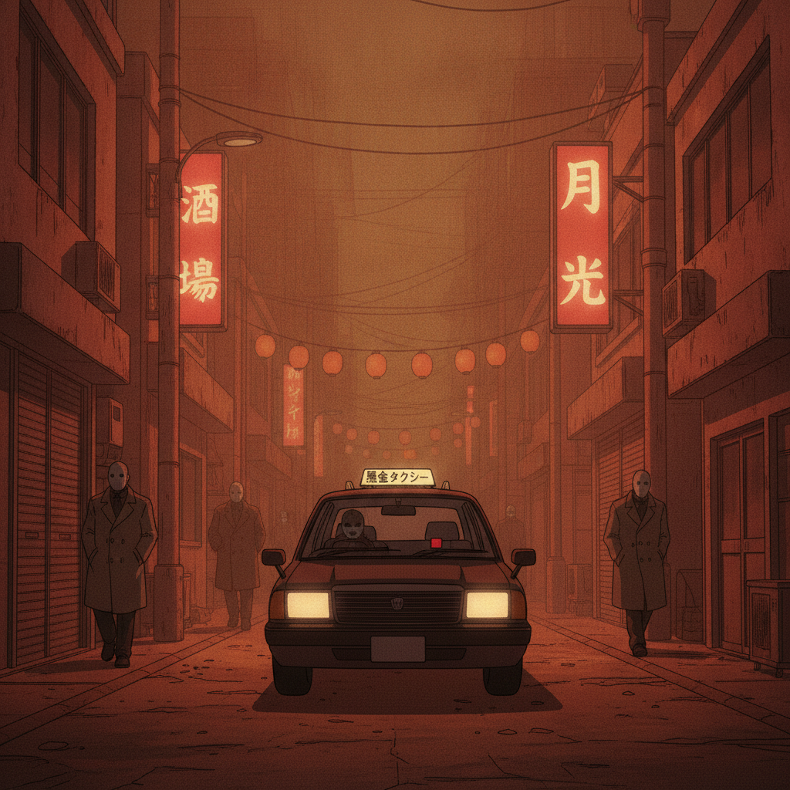
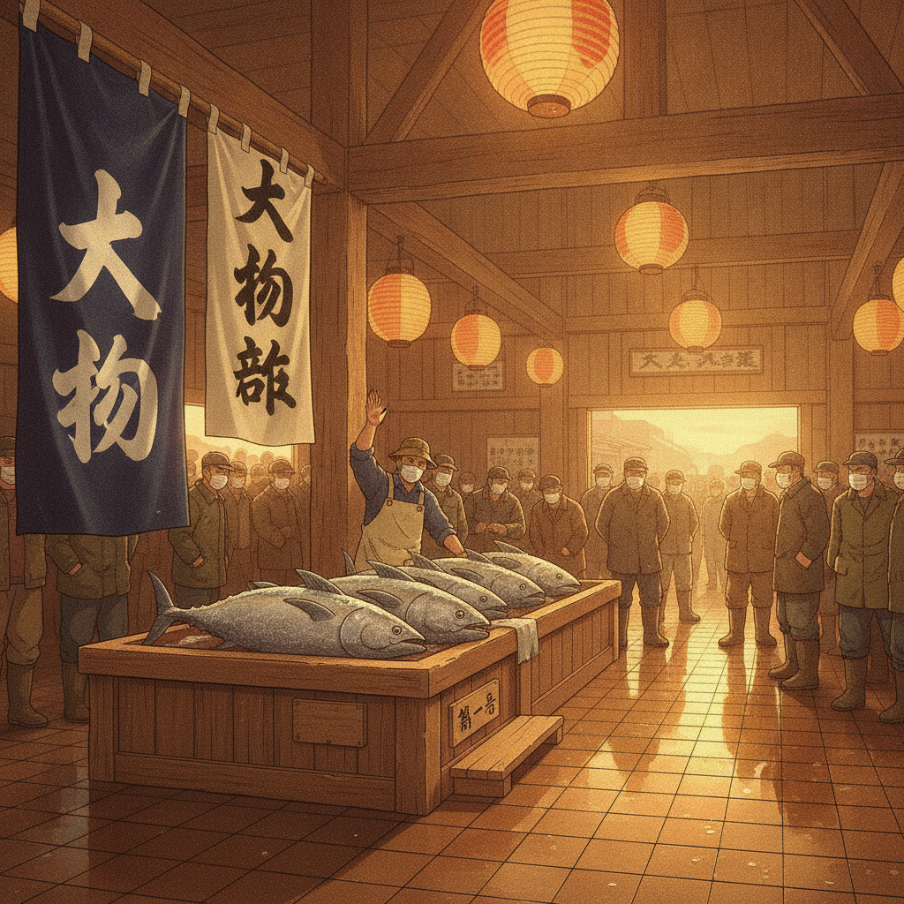
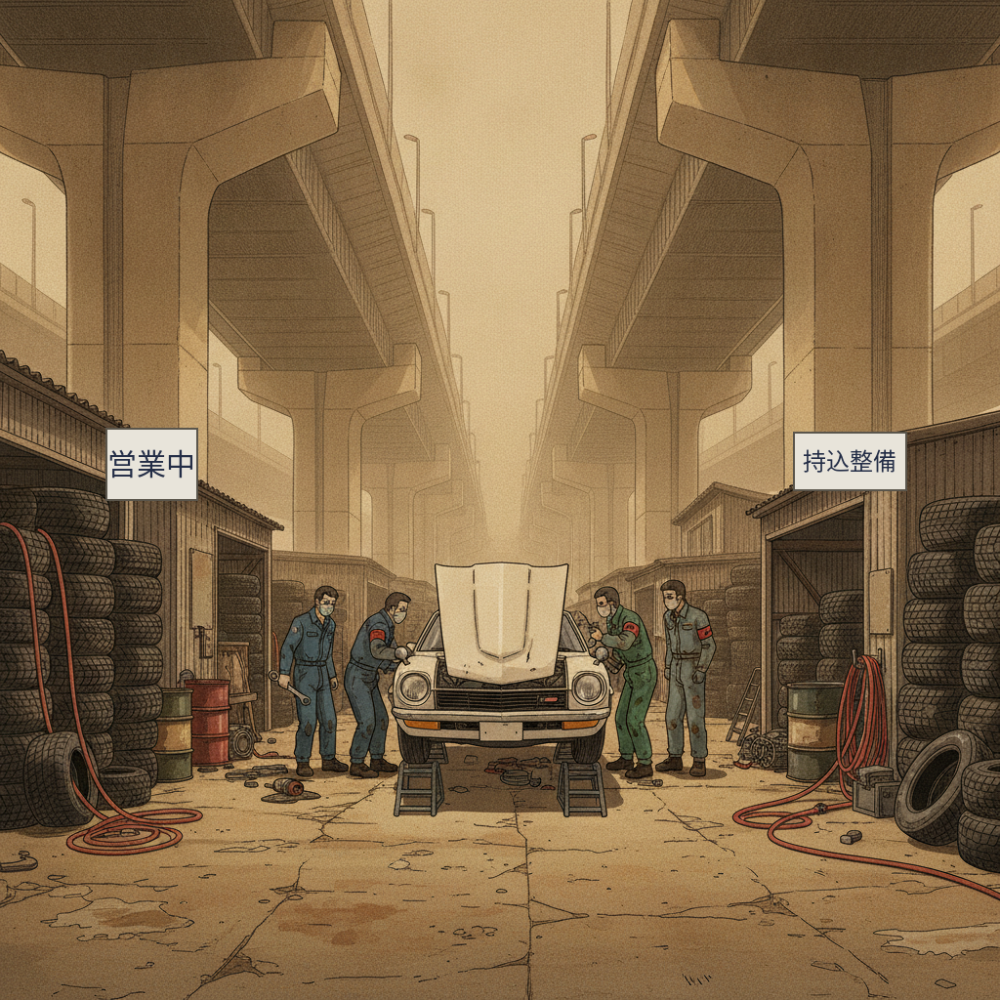
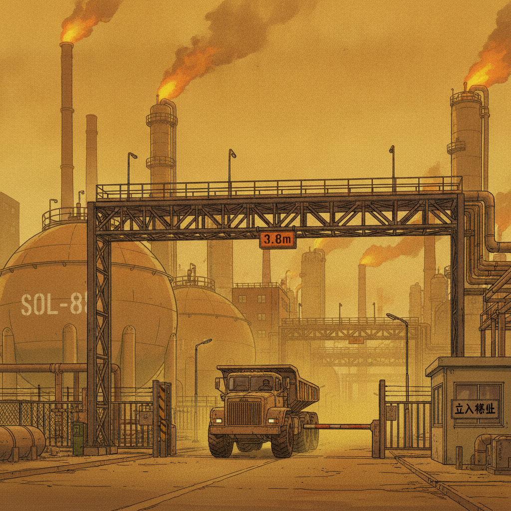
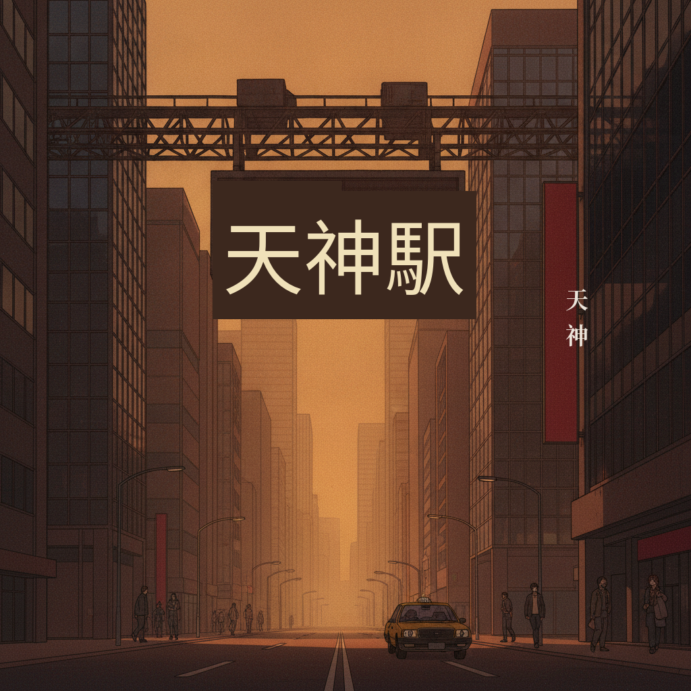
II. The Aerium — Upper City
Above the dust cloud: clean pale sunlight, arcologies, the skyway ribbon.
KUROGANE BAY / Tokyo Drift 3D — the gig-driver game
Chapter writer: Upper City artist. 2026-10-05. Canon sources: world bible v2, retrofutur identity plan (§8 DO/DON'T are hard law), Showa-dust extrapolation. Design research: 2 Gemini consult rounds (daytime expressway cel direction; Showa-Metabolist arcology design) — digested below, never quoted. 5 bespoke 2D mocks verified pixel-by-pixel before embedding.
0. The half-second rule (the Lower/Upper contrast law)
A single glance at the horizon or the ambient light must tell the stratum. This is the chapter's load-bearing requirement:
| LOWER CITY — "The Trench" | UPPER CITY — "The Aerium" | |
|---|---|---|
| Sky | Never visible; murk to 100 m, then the industrial underbelly of the Upper (conduit bundles, elevator tracks, foundation plates) | Open pale-blue sky, thin high cirrus, 360° horizons |
| Light | Amber murk, sodium haze, umber shadows | Clean pale sunlight, halogen-white noon, warm umber shadows |
| Ground plane | Dust-caked, littered, oil-stained | Sealed white concrete, washed, maintained |
| Buildings | Capsule towers, rusted turnbuckles, exposed ducting | White board-formed concrete megastructures, plug-in pods, terracotta roofs |
| Roads | Trench grid: narrow, 90° intersections, stop-and-go, high-friction | Skyway ribbon: curvilinear viaducts, banked ring roads, low-friction, top-speed |
| Vehicles | Dust-armored, cyclone filters, tarped roof-racks | Clean, sealed, altitude-compensated, waxed |
| Signage | Enamel, sand-blasted, hand-stenciled | Enamel, split-flap Solari boards, JH Gothic, maintained |
| Humans | Hidden, masked, drive-up only | Visible at a distance, masked as fashion |
Palette law (identity §8): the Upper City is the ONLY place cool tones are allowed. Canon: clean off-white #EDEAE0, halogen white, deep imperial purple #3D2B50. Everything else stays warm: ivory/sandstone concrete in sun, dry ochre-grey shadow bands, warm umber cel-shadows. Imperial purple is reserved for accents of power — corporate monogram flags, Minami board livery trim, Adaeze's cap braid — never buildings. A purple building is an instant fail (the PR #358 lesson).
The noon-lock rule (the PR #358 lesson, canonized): these layouts exist ONLY for bright midday. Night-flipping a daytime design swallows the ink linework (daytime cel needs 75–95% luminance surfaces against 100% black ink), triggers the panic-neon trap, and reverses air perspective into muddy purple fog. There is no night Aerium. Ever.
1. HAIBARA HEIGHTS — clifftop estates above the cloud
District 7. Tycoon demilitarized zone. The dust is a distant amber sea below the cliff; the air is clean, thin, and quiet. Gig profile: luxury limo work, discreet personal deliveries (tapes, wine, pedigree pets), silent rides — never look in the mirror.
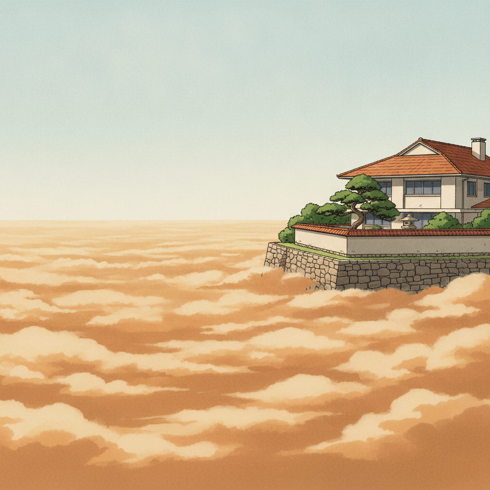
Mock 2 — a clifftop estate: terracotta kawara roof, kuromatsu pine, ishigaki wall, the dust sea below.
Building types
Showa-modernist clifftop villas — the language of Antonin Raymond and the Isozaki residential phase, not the Mediterranean:
- Low-slung horizontal cantilevers of bush-hammered concrete, paired with charred Japanese cedar (shou sugi ban) screens.
- Terracotta kawara roofs in Japanese profile (half-round ridge tiles, deep eaves) — canon per district signature. HARD LINE: never Spanish barrel tile, never Mediterranean stucco, never kidney pools — those betray the setting instantly. Copper valley flashing patinated turquoise is the correct metal accent.
- Glazing in dark bronze-anodized aluminum, proportioned like sliding shoji/fusuma screens — modular bays, never sweeping frameless panoramas.
- Flat-roof variants with gravel ballast and cast-concrete coping stones (the Isozaki end of the street).
- White plaster garden walls with terracotta coping; estate gates with brass intercom grilles and enamel nameplates; gatehouses sized for a single guard.
Gardens (the status signal): wind-sheared Japanese black pine (kuromatsu) wired into horizontal silhouettes; dwarf sago cycads; dry raked-gravel courts (karesansui); cyclopean dry-stacked volcanic-stone retaining walls (ishigaki) at the cliff edge; shallow dark-bottomed reflecting basins spilling over slit-weirs; stone lanterns. No lawns — lawns are a water crime in a dust city.
Unique buildings
- The Grand Haibara Auction Hall — white concrete drum on a stone podium, terracotta ring roof, slit windows only (what's auctioned inside is never advertised on the facade). High-society auctions, money laundering with a gavel. (Art-book addition; not in bible canon — see Open Questions.)
- Estate decon-porticos — every villa entrance has a small air-lock pavilion: UV fog nozzles, boot-wash grates, a sealed door within a door. Decontamination-adjacent architecture made domestic. Guests arriving from below are scrubbed like cargo.
Street props (Haibara)
- Ishigaki cliff-edge retaining walls with brass survey plaques; estate boundary stones; gravel pull-offs instead of sidewalks (nobody walks — the Kuro-Kiri ordinance still holds).
- Private drive-up courier hatches: a brass pneumatic-tube receiver set into the garden wall, enamel-numbered.
- Trimmed hedge lines in cast-concrete planters along the estate ring road; the only vegetation at road level, maintained by unseen gardeners.
Vehicles (Haibara)
- Limo class: Ohtori Sovereign stretched sedans in black/cream two-tone, lace curtains, chauffeur-driven. The vehicle clients inspect before they inspect you (Appeal ≥ 70 is the fare gate).
- Private-security patrols: white SUVs with imperial-purple stripe, full blackout glass, roof searchlight on a push-rod (never a sensor blister).
- No haulers, no kei vans — freight arrives sealed and unmarked.
Characters (Haibara)
- Executives: tailored suits over porcelain or lacquered fashion half-masks — the Upper City answer to the mask law. A mask here is a status object: white porcelain for old money, black lacquer with a painted accent for the ambitious. No faces, ever (character law holds above the cloud).
- Private security: white coveralls, full-face industrial respirators, mirrored goggles, no insignia but a numbered enamel shoulder plate. Polite, silent, everywhere.
Items & props (Haibara)
- Sealed wine crates with wax-stamped manifests; pedigree-pet carriers (ventilated, brass-latched); acetate tape reels in padded cases (the Record-Shop Phantom's clients live here); auction paddles numbered in enamel; paper scrip in fat envelopes.
2. MINAMI AERIUM — the arcology district
District 8. White concrete towers, skybridges, corporate plazas with 360° horizons; sky-elevator Terminals 1 & 3. Councilman Minami's transport-board HQ. Gig profile: corporate courier runs, toll-jurisdiction escapes, executive extractions, decontamination-dodging smuggles.
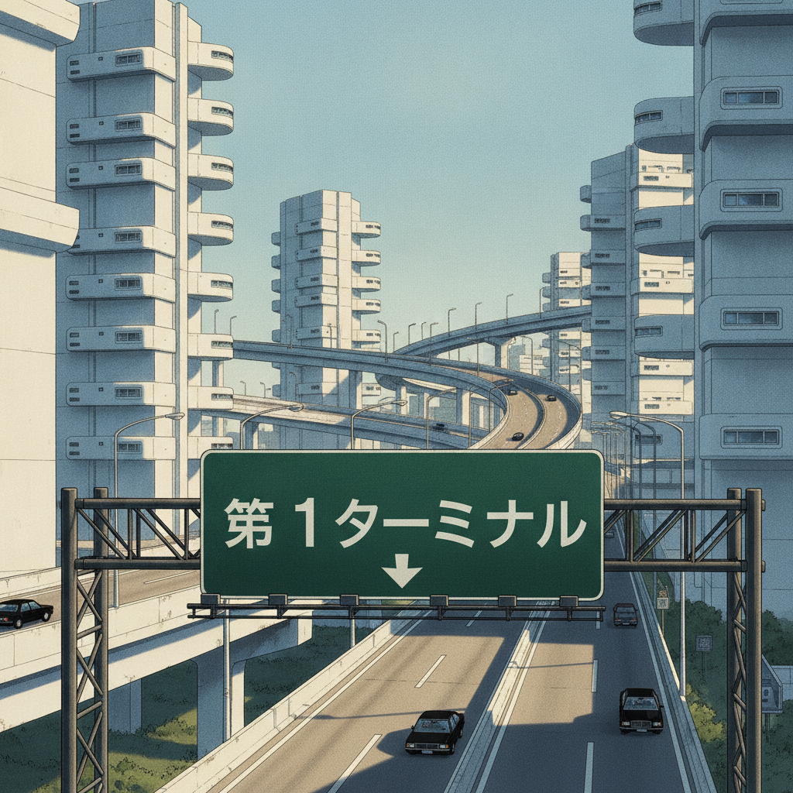
Mock 1 — the skyway ribbon: banked viaduct threading Metabolist arcologies, form-tie holes, capsule pods, green enamel signs.
Building types — Showa-Metabolist arcologies
The lineage is Nakagin Capsule Tower, Tange's bay plan, Expo '70 — skeleton and cells, never monoliths:
- Slip-formed mega-cores (stair/elevator/service) flanked by cantilevered bracket-seats where modular pods bolt on via visible unpainted high-tensile steel mounting plates. The skeleton/pod cleavage must be legible — a smooth seamless tower is generic sci-fi and fails review.
- Plug-in capsules: concrete pods with porthole or squircle windows sealed by thick black neoprene gaskets (never flush curtain glass). Window rhythm is the facade's heartbeat.
- Board-formed white concrete with the 1 m × 2 m formwork grid and P-con form-tie holes as crisp ink dots — the anti-sterility device. Weathering streaks run tight and vertical, ONLY beneath drainage spouts, expansion joints, and parapet caps (high altitude bakes surfaces chalky-white; grime has nowhere to hide).
- Exposed external MEP risers: spiral-welded galvanized ventilation ducts, cast-iron wastewater risers, corrugated utility trays on raw unistrut brackets climbing the cores.
- Expo-era space-frame trusses (tetrahedral ball-joint) bridging towers and anchoring plazas — painted safety orange, pale gray, or faded cream.
- Rail-mounted gantry cranes crowning the primary cores, yellow-and-white: the building is maintained, pods are extracted and replaced. Maintenance culture is visible in the structure.
- Heavy brise-soleil concrete fins shading modules — cast draft angles, never thin aerodynamic sheet.
- Skybridges at two or three levels: enclosed white-concrete tubes with ribbon windows, or open truss spans with expanded-metal decking, double-pipe handrails, and cage-ladders.
- Ribbon glazing as solid high-key cobalt-to-cyan gradient bands broken by razor-sharp white diagonal glare strikes — never realistic reflections.
Unique landmark buildings
- Minami Metropolitan Transport Board HQ — the toll empire's citadel: the tallest core in the Aerium, ringed by its own private banked loop road, crowned with the board's mon in imperial purple. Deadpan, windowless at the crown. The Minotaur's office has no windows — he doesn't need to see the city to tax it. (Tone: played 100% straight. No jokes, ever.)
- Moriyama Heavy Logistics Tower — harbor-facing arcology with a dock-tariff Solari board the size of a tennis court on its flank; container-crane motifs in the concrete fins. Baroness Moriyama's tariffs are posted here in brass numerals.
- KPC Executive Tower — the Sol-88 monopoly's clean face: the whitest concrete in the city, a single flare-stack motif worked into the crown (the refinery, aestheticized). Corporate police motor pool at its base.
- Terminal 1 & Terminal 3 — the two Aerium sky-elevator terminals (see §3).
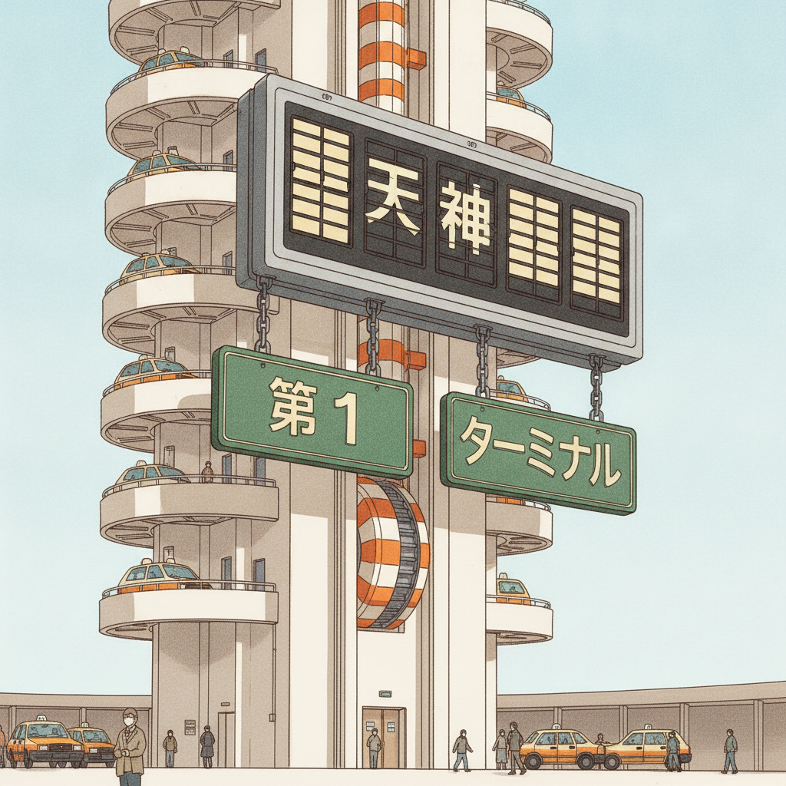
Mock 3 — Terminal 1: open freight decks riding cables, striped counterweight drums, Solari boards, taxi queues.
Street props (Minami)
- Toll gantries: pale-gray angle-iron lattice spans with transformer boxes and maintenance walkways; deep-green enamel signboards, white JH-Gothic kanji dominant over small English Helvetica subtext, reflective white borders; mechanical split-flap fare boards that clack as toll brackets update; yellow triangular warning pictograms.
- Toll booths with coin-hopper slots and pneumatic receipt tubes; bribe-chute receivers (a fat envelope of scrip fits the kōban pattern).
- Decontamination arch gantries on the terminal approach roads: UV lamp bars, chemical-fog nozzles, enamel warning plates — scrubbers as street furniture.
- Hijō denwa emergency call boxes (the orange pillar phone) at viaduct intervals — a human metric for scale.
- Plaza set: white concrete paving in a radial pattern, trimmed hedges in cast planters, flagpoles with corporate mon flags, a central Solari departure board, perimeter bollards with purple bands.
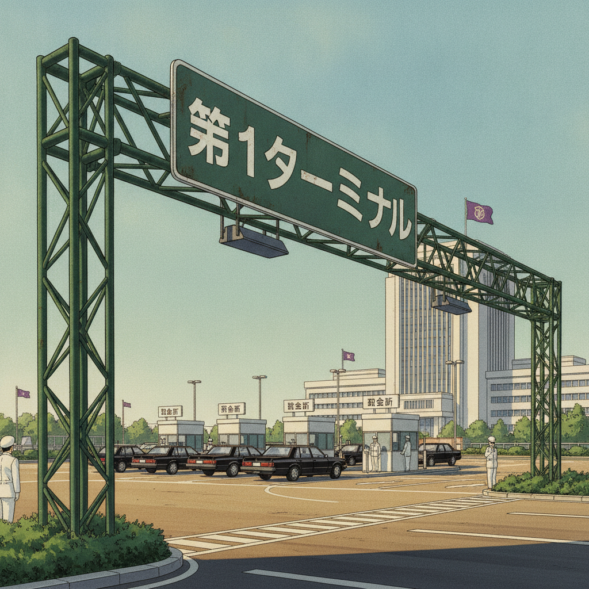
Mock 4 — a corporate plaza: 360° horizon, split-flap toll boards, parked executive sedans, HQ tower with monogram.
Vehicles (Minami)
- Corporate sedans: Ohtori Sovereigns in black/ivory, vacuum-tube taillights, altitude compensators standard (a Lower tune runs rich and smoky upstairs — and attracts corporate police).
- Security patrols: white pursuit sedans with purple stripe, mechanical roof sirens, push-bars — the KMTED's clean cousins, better funded, worse humored.
- Courier capsules: brass pneumatic cylinders on Tatsumi Hauler roof-racks, sealed and lead-lined for the decon dodge.
Characters (Minami)
- "Highline" Adaeze Okafor — Terminal 1's dispatcher-queen. White uniform with gold-braided cap, porcelain half-mask. Controls who rides up and who waits; politeness is a weapon. Gatekeeper gigs: earn her favor for Express Freight Line access, or run the broken industrial lifts. Her booth overlooks the car decks; her Solari board is the terminal's heartbeat.
- Corporate couriers: gray suits, gray half-masks, brass capsule cases chained to the wrist.
- Terminal security: white armor-shell coveralls, full-face respirators, numbered plates; they sweep for contraband during the queue window.
Items & props (Minami)
- Toll scrip tokens (stamped brass); punched ROUTE-88 cards for the Upper layer (clean blue vector wireframe redraw); lead-sealed smuggler trunks (heavy — changes drift physics); corporate courier capsules; Express Freight Line monthly passes ($500k — the endgame money sink).
3. The skyway ribbon — road topology (the anti-trench)
The two layers must NEVER feel like the same street grid. Where the Lower City is a trench grid — narrow, 90°, claustrophobic, stop-and-go — the Aerium is the skyway ribbon:
- Curvilinear multi-lane viaducts threading between arcologies in long S-curves; banked perimeter ring roads around tower clusters; sweeping on/off-ramps with 200 m sight lines.
- Low-friction, top-speed cruising: the Aerium is where the Raiden Fastback and Mirage Zero live. Cornering is committed sweepers, not alley flicks. Altitude compensators and sealed bearings are the required kit.
- Showa civil-engineering anchors (so it never reads as sci-fi):
- Hammerhead bents or inverted-U portal frames, chunky chamfered corners, visible lift lines, cast-in black stencil registration numbers on every pier.
- Dual-tier corrugated W-beam guardrails on square H-beam posts; mint-green acoustic-barrier walls with scratch-mottled acrylic observation windows.
- Finger-plate (tooth-comb) expansion joints across the deck; cast-iron drop scuppers feeding exterior downspouts strapped to pier faces.
- Cobra-head sodium lamp masts — unlit by day, faint orange reflectors visible in dirty glass.
- Box-girder deck undersides routed with bracketed utility conduits, perforated inspection runways, and yellow clearance bars on steel turnbuckles.
- Pier bases wrapped in riveted steel seismic jackets, oxidized red-orange primer or utility gray.
- Scale anchors, never deleted by the look: hijō denwa boxes, 85 cm crash barriers, maintenance hatches, catwalks, cage-ladders. Stylization means simplified rendering, not omitted engineering — without the human metric, a 100 m viaduct reads as a plastic toy.
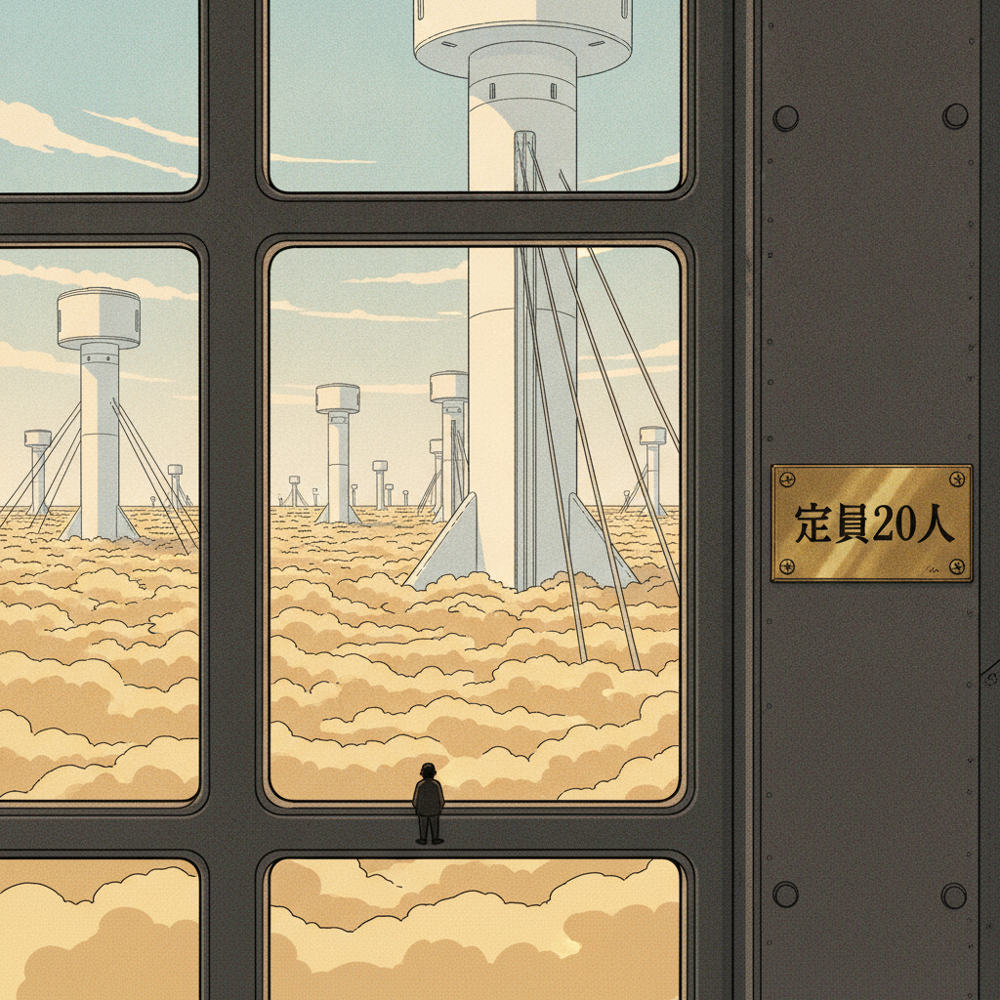
Mock 5 — the cloudbreak: arcologies rising from the dust sea, ring-road viaduct, elevator cables descending.
The cloudbreak vista (the signature shot)
From the ring road's highest banked turn: an endless ochre cloud sea to every horizon, white towers rising from it, one elevator tower's cables plunging into the deck below. This is the Aerium's rooftop moment — Tekkonkinkreet's murk-below/clarity-above, earned by riding the elevator instead of climbing. The 8-second ascent's Gig Triage Screen plays against this view.
4. Daytime cel-direction rules (digested from consult)
- Noon-lock: exposure, local values, and cel separations are authored for midday only. No night variants, no dusk grades. (The PR #358 failure, canonized as law.)
- Concrete shading: sun face = pale ivory/sandstone/bone (5–10% yellow bias); step-1 shadow = dry ochre-grey/muted khaki, warm terminator; ribbon windows = cobalt-cyan gradient bands with white glare strikes. Second bands never purple.
- Anti-sterility: formwork grid + P-con tie holes as ink marks; vertical weathering streaks only under spouts/joints/caps; exposed risers, cranes, catwalks break the mega-surfaces.
- Air perspective: desaturated, high-key warm sky-wash with distance — never blue-shifted into cold haze, never purple fog.
- Emissive restraint (identity §8): only filaments, phosphor CRTs, vacuum tubes — harsh, local, clipped. No volumetric glow soup. The Aerium at noon barely needs emissives at all.
- Tech ceiling: spherical-CRT glass, rocker switches, thumbwheels, Solari boards, pneumatic tubes. No flat LCDs, no holograms, no neon soup, no carbon fiber, no seamless injection-molded blobs.
5. Upper City mask culture (character law, applied above the cloud)
Craig's character law holds at every altitude: no faces are ever modeled. Above the dust, the respirator becomes the porcelain half-mask — a fashion/status object, not survival gear:
- Old money: white porcelain, unadorned. The ambitious: black lacquer with one painted accent. Functionaries (Adaeze): white uniform porcelain with gold braid.
- Security and terminal staff keep full-face industrial respirators — the working mask vs. the society mask is a class read the player learns without a word of dialogue.
- Private-security shoulder plates are numbered enamel — identity by number, never by face.
6. How the Aerium plays (systems, not jokes)
Craig's law: comedy emerges from systems. The Aerium's systemic engines:
- The sealed trunk tradeoff: lead-lined smuggler trunks beat the decon scrubbers but add mass that changes drift physics on banked sweepers — smuggling upstairs is a handling puzzle, not a stealth meter.
- Toll-jurisdiction escapes: corporate district borders end KMTED authority (Heat 3 excepted) — the ring road's toll gates are shed mechanics you drive through at speed.
- The altitude tune: a Lower City carb tune runs rich upstairs, smoking visibly and drawing corporate police — the altitude compensator is a purchase with a visible consequence.
- Queue physics at the terminals: the Express Freight Line vs. the Commercial Hopper is a standing-and-scrip gamble played in the queue lanes; inspection triage (toggle the scrambler, bribe the gatekeeper terminal, or sweat) runs during the wait.
- The Meter Maid, elevated: she has no jurisdiction above the cloud — which is exactly why an Upper City parking ticket, when it rarely happens, is issued by a corporate warden with a bigger book. (System fact, not a gag.)
7. Lower/Upper contrast checklist (for every future Aerium art task)
- [ ] Half-second stratum tell: white concrete + open sky + halogen noon (never amber murk)
- [ ] Roads read as skyway ribbon (curvilinear, banked, multi-lane) — never a trench grid
- [ ] Buildings daylight-warm (ivory/bone/terracotta) — never purple, never night-flipped
- [ ] Skeleton/pod cleavage legible on every megastructure — no seamless sci-fi monoliths
- [ ] Showa anchors present: enamel signs, Solari boards, W-beam rails, lattice gantries, cobra-heads, hijō denwa boxes
- [ ] Scale anchors present: expansion joints, catwalks, barriers, hatches, maintenance hardware
- [ ] Cool tones only as power accents (imperial purple flags/livery/trim)
- [ ] Every human masked; Upper masks are porcelain/fashion, never bare faces
- [ ] No neon soup, no holograms, no flat LCDs, no digital-era form factors
- [ ] Tech is stamped steel, vacuum tubes, bakelite, rivets, pneumatic brass
8. Open questions
- No "BIBLE DELTA" markers found — grep over
~/workspace/game-design/returned zero hits; nothing in the canon sources is flagged pending. - The Grand Haibara Auction Hall (§1) is an art-book addition, not bible canon — needs Craig's approval or a bible amendment.
- Mask-law boundary: the bible's mask law is dust-protection motivated; the porcelain fashion half-mask above the cloud is this chapter's extrapolation. Confirm Craig wants the law to hold at altitude (recommended: yes — it preserves the mystery-and-cheap identity and the half-second character read).
- Terminal faction control: bible says terminal control is the endgame war map and Terminal 2 anchors Tenjin — but which faction currently holds Terminals 1 & 3 (Minami's board? contested?) is unanswered. Needed before briefing terminal-set-piece tasks.
- Upper City policing: KMTED authority ends at corporate borders — but who writes the tickets on the skyway ribbon day-to-day: corporate security, or a KMTED sky division? Affects the cop-system brief.
- Estate interiors: art book is 2D/exterior only per this brief — but gig design will eventually need villa gate/drop-off interaction points (courier hatches are proposed in §1; needs a gameplay pass).
- Terracotta guardrail: bible canon says terracotta roofs; design research warns Spanish barrel tile betrays the setting. This chapter resolves it as Japanese-profile kawara in terracotta — flagging the resolution for Craig's confirmation.
Mock files: mock-1-skyway-ribbon.png, mock-2-haibara-estate.png, mock-3-terminal-1.png, mock-4-corporate-plaza.png, mock-5-cloudbreak-vista.png — all 80s-anime cel, daytime, verified: no neon, no night, no purple buildings, no unmasked faces.
Consult notes (process, not canon): consult/daytime-art-direction.md, consult/arcology-design.md.
Mock gallery
III. Nagisa — The Outskirts
Mountains, beach, and the teal sea nobody can explain.
KUROGANE BAY art book, chapter: Outskirts
The game's exhale. The one place the dust can't reach — and the water is the wrong color.
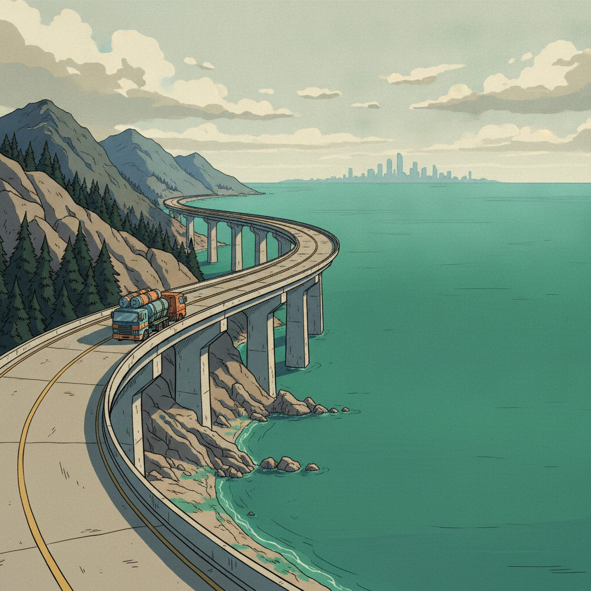
The landscape: one road in, one sea that refuses the sky
Nagisa is the entire outside world compressed into a single corridor. One long highway runs from the Lower City to the coast — the only road in and out. Off it, a coastal viaduct sweeps across the water on concrete piers, and mountain switchbacks claw down the slopes of Mt. Kurogane through dark pine forest. There are no shortcuts, no side routes, no grid: this stratum is a line, not a network. Driving it is endurance — fuel and filter math, axle-weight limits on the viaduct, fog and crosswind warnings from the waystation chalkboard.
The mountains are pine-black, cut with board-formed concrete retaining walls, hazard-orange guardrails, and painted iron mirrors on concrete pylons at the blind hairpins. The beach is not a destination — it is a narrow strip of teal-stained rock and gravel between the road and the water. Nobody goes there.
Across the water, on the far horizon: skyscraper silhouettes, painted flat into the skybox. Not geometry. A backdrop card of towers, hazy and pale — the city is always over there, and you cannot drive to it. (Canon performance trick: zero draw calls beyond the fog wall.)
The light: Nagisa gets the authored fixed lighting of a teal afternoon — pale chalk-bone sky, hand-painted clouds, warm umber shadows. It is the visual antithesis of the Lower City's amber murk and the Upper City's clean white sun. The color shift is the UI. The moment the cutscene plays and the teal hits the screen, the player has left the city. No map label, no text — just the wrong water.
Arriving: the cutscene (canon, 4–6 seconds, three Showa-anime shots)
- Wheel close-up — a tire at full speed, pine forest strobing past.
- Wide coastal viaduct over the teal sea — the money shot, mock #1.
- Dashboard radio scrub — the in-cab ROUTE-88 as a vacuum-tube radio scrubs through pirate stations, 89.4 MHz settling with a CHUNK.
The player enters the district at full cruising speed. A catapult, not a parking brake.
The sea: how to paint wrong water
The sea at Nagisa is a vivid, unnatural teal-green. Not tropical, not algae — the wrong color, like a misprinted postcard. It stains the shoreline, the fishing boats, the sky at sunset. Art-direction rules for the sea (digested from a Gemini consult with an anime art director — principles, not quotes):
- Hue lock: 168°–174° — a cold, synthetic viridian/phthalocyanine green. Never drift toward 185°+ (sky cyan = Caribbean resort) or 145°–155° (olive = pond algae). Think poster color Viridian cut with Cerulean and a trace of black.
- The water refuses the sky's light. The sky is high-value, low-saturation (chalk-bone, ash-peach). The water is darker and more saturated than the atmosphere above it — low-value, hyper-saturated midtones. In nature, dark water mirrors a bright sky. Here, the water declines the reflection. That refusal is the misprint effect.
- Flat and viscous, never wet. No smooth horizon-to-shore gradients, no translucent refraction, no sand visible beneath. A flat gouache base with a rigid 2-step cel treatment (base wash + shadow tone cut hard, zero feathering). Swells rendered as calligraphic cut-creases. It must read as cold machine oil or liquid enamel, not water.
- The knife-edge boundary. Where water meets shore: a hard ink line, no white foam, no surf break. Water laps against rip-rap and stained concrete without transition — the Ponyo-storm device. Teal tide-line rings stain pilings, hulls, and rocks. No barnacles, no mussels, no sea lettuce — this water does not seed life; it deposits crystalline yellow-green mineral crust on mooring lines and cables, stiffening ropes into calcified rods.
- Foam, when it exists, is never white. On the glow-nights (see § The mystery), the surface films teal-pale, like a lamp lit from below.
The skyline trick: keep the teal water flat and the skyscraper silhouettes flatter — both painted, both wrong. The whole horizon is a postcard that misprinted.
Locations
The Iron Wheel waystation (District 9, mile 88 on the highway)
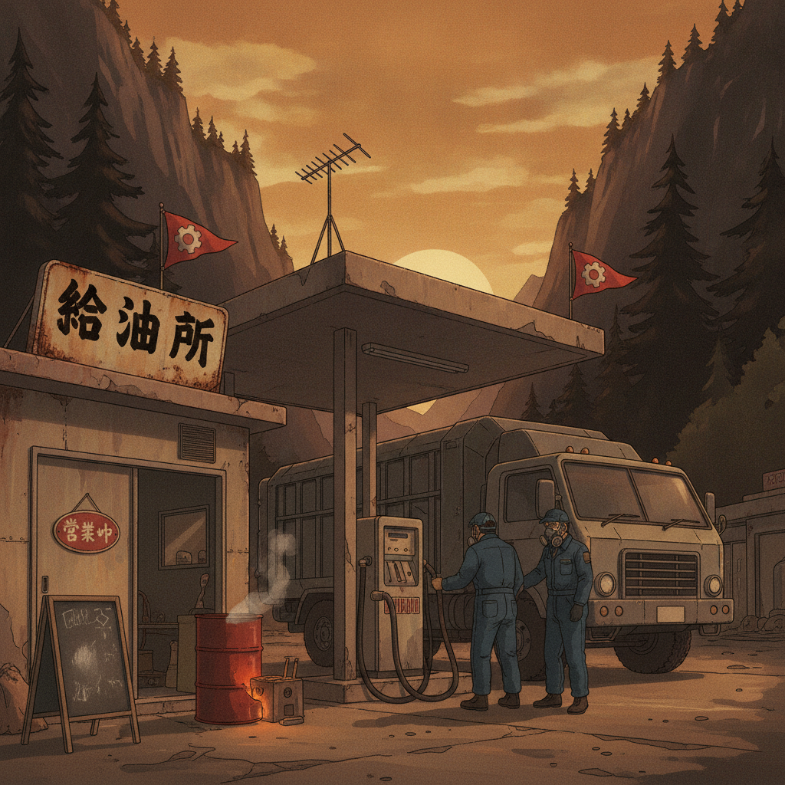
The Union's sovereign outpost: refueling, repairs, pirate radio, and the last place that will save you before the viaduct. Design language: a mechanics' republic, deadpan-serious — mutual survival carved out of state infrastructure.
- The cold chalkboard. A massive slate-and-angle-iron board beside the fuel island, hand-lettered in industrial wax chalk with military timestamps: VIADUCT: HIGH WIND, AXLE LIMIT 20T · RADIO FREQ 89.4 FM LIVE. Route conditions are public infrastructure here — reading them is survival, not flavor.
- Stenciled logistics markings only. No municipal signs: DIESEL A-HEAVY ONLY · NOT FOR DOMESTIC BURNERS spray-stenciled on fuel tanks; weight-tiered parking bays sprayed directly on tarmac (light utility up top, triple-axle low).
- Flags and territory. Union pennants on grime-stained sailcloth — a fuel-injector cross-section over an anchor, branch number DISTRICT 4 HARBOR HAUL, safety-wired against the gale. Tire-casing windsocks on salvaged tubular-steel masts read viaduct wind-shear for incoming drivers.
- The scrap stove. A 55-gallon drum with a home-welded flue, glowing red in the repair bay; workers burn logging offcuts in it. A cast-iron kettle sits on top, baling-wired down so it can't vibrate off. Perpetually boiling.
- The tally-peg board. Drivers inbound from the switchbacks drop heavy brass numbered tags on a nail board at the dispatch desk. The tag stays until the driver clears the viaduct outbound. An unclaimed tag means a breakdown or spill on the only road. The board is the district's heartbeat and its missing-persons system.
- The logbook of the glowing nights. Kept at the dispatch desk in a brass-capped ledger. The waystation keeper records, in the same hand, dates and brief factual notes: water glow observed 23:40, tide ebb, no wind. No theories. No underlining. Just the record.
- The pirate radio. A rooftop vacuum-tube transmitter on a salvaged antenna mast (mock #2 shows the Yagi array). The Union's mouthpiece: shift-horn schedules, axle-limit warnings, driver call-ins. Frequency 89.4 FM — the third shot of the arrival cutscene.
The fishing village
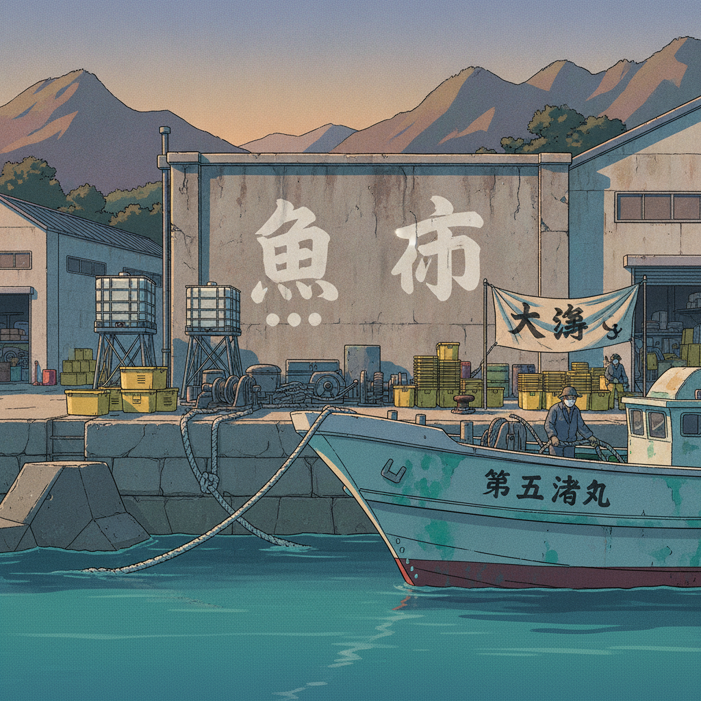
A working harbor, never a postcard. Hermit fishermen, teal-stained boats, and a village that has physically turned its back on the sea.
- Structural avoidance — architectural denial. Sea-facing walls are blank masonry, bitumen-coated bricked-up voids, solid sheet-metal cladding: zero windows face the water. Houses and warehouses orient toward the mountain cuts; steps down to the water do not exist — only sheer concrete breakwaters with ladder rungs removed at the bottom two meters. The slipways are sealed with railway iron welded between H-beams, anchored into bedrock; boats go out on davits and hoists, never launched.
- Decontamination as routine, not medicine. Wheel-wash trenches of lime-clouded water at the dock apron — trucks scrub teal sediment off their tires before touching the waystation or the mountain road. IBC tanks of clear mountain water, trucked down from the logging camps, stand on stilts at the pier head: fishermen wash decks, tools, and boots with mountain water, never seawater.
- The wear patterns. Creosote-blackened docks; high-tide lines of iridescent petroleum scum, not algae; fractured concrete piers with rusty rebar spalling out; dissimilar-metal corrosion blooming powdery white and pale-green where brass meets steel.
- The props of labor. Yellow HDPE fish tubs warped by UV, stacked five high with frayed ratchet bands; hydraulic winches on raw I-beams wound with grease-soaked wire rope; corrugated sorting tables sluiced by battery pumps — bare of fish, bearing only scraping paddles and disinfectant buckets.
- Giyōfū remnants stand in the village's upper row: sand-blasted hybrids where European brick facades meet Japanese tile roofs — plaster stripped in patches by the wind into a map of the wall's own construction, arched windows bricked halfway up into squinting half-arches, verandas enclosed into amber dust-lock porches glazed with smoked acrylic. Two architectures weathering differently: the blend is legible as struggle.
The logging camps (Mt. Kurogane slopes)
Upper-mountain clearings above the switchbacks: canvas-and-timber barracks, spar-pole yarders with wire rope, slash piles burned in ringed pits. The camps are the district's water supply (mountain-water tankers run downhill to the fishing village — the only clean water the village trusts) and its firewood source for the waystation stove. Mountain service vehicles — not trucks — own these roads: short-wheelbase winch rigs with cyclone intakes and chain racks, built for switchbacks a long-haul rig would die on.
The coastal viaduct
The single engineering boast of the district: a concrete viaduct on bored piers, sweeping across a headland bay to shorten the highway. Wind warnings are real — the waystation posts axle limits, and heavy trailers cross at reduced speed or wait. The viaduct is the arrival cutscene's wide shot and the district's most dramatic driving: open air, the teal sea below, nothing between the player and the horizon but guardrail.
Vehicles
| Vehicle | Role | Signature |
|---|---|---|
| Long-haul rig (Goliath 800-class) | The highway's sovereign. Outskirts runs are its gig type. | Cyclone filter intake cone on the hood, spare filter canisters strapped on the cab roof like ammunition, hazard-orange stripes, dust-ochre over rust-red primer, wired headlight guards |
| Fishing truck | Short-haul from docks to the waystation and city | Cab-over flat-nose, insulated fish box with teal-stained scuppers, rubber-booted drivers, wheel-wash lime residue on the tires |
| Mountain service vehicle | Logging-camp winch rig | Short wheelbase, spar-pole A-frame, cyclone intake, chain racks, high-clearance leaf springs — built for switchbacks, not speed |
| Harbor workboat (small craft, static) | Background only — the wheelman never leaves the wheel | Flat-bottom skiffs and steel trawlers: red-lead primer peeling over oxidized steel, vertical soot streaks from dry-exhaust stacks, teal tide-rings at the waterline |
Characters (all masked — character law holds: no faces, ever)
- The waystation keeper — Iron Wheel Union, mid-50s. Grease-blackened coverall, canvas dust hood under a welder's mask pushed up over a full respirator, brass tally-tags on a lanyard. Speaks in single-sentence route advisories. Maintains the glow-night logbook without comment. The district's dispatcher and its archivist.
- The hermit fishermen — no names given, none offered. Sou'westers, rubber boots, simple cloth masks under rubberized aprons. They haul with body weight against the cleats and wash their boots in mountain water. When asked about the sea, they change the subject to the weather — a refusal so consistent it is a district law.
- The mountain crew — logging fallers and the tanker drivers who run mountain water downhill. Ear-protection muffs worn over dust hoods, canvas chaps, long-handled brass testing hammers for the winch rigs. Their labor ritual is the shift-change inspection: circling a vehicle, tapping axle boxes and rims in rhythm, listening for fractures — automatic, wordless, earned.
- The radio voice (89.4 FM) — never seen. The pirate station's night announcer: static-laced, unhurried, reading viaduct wind reports and the waystation's tally board like a shipping forecast.
Items
- The teal catch — the village's product: fish pulled from the wrong water, crusted with mineral scale at the gills. Packed in yellow HDPE tubs on ice, wrapped in sealed lead-lined containers for the city run — raw contraband through the elevator scrubbers unless sealed (canon: the Decon Dodge). Fragile high-speed cargo: Kenji the Fish-King's gigs originate here.
- Logging gear — chain, wire rope, felling wedges, brass testing hammers; the consumables of mountain work.
- The waystation logbook — brass-capped ledger at the dispatch desk. Dates, times, observed glow. No theories. The only written record of the mystery, and it refuses to become evidence.
- Refueling equipment — stencil-marked diesel bowsers (DIESEL A-HEAVY ONLY), hand-cranked transfer pumps, brass fuel cans with lead-seal tags. Sol-88 arrives by tanker; gray fuel changes hands off the books.
The sea-mystery treatment (canon — sketchy Evangelion-like, NEVER resolved)
The year the deep-sea coal seams were cracked for Sol-88, the water changed color overnight. Three accounts exist, and all three stay in the chapter, forever unresolved:
- KPC's official line: copper runoff from the drilling rigs. Printed on a faded enamel sign at the waystation fuel island, sand-blasted to near-illegibility.
- The old fishermen: something woke up down there, and the sea is looking back. Offered only when the player isn't asking — a line dropped over the radio or at the tally board, never explained.
- The waystation logbook: the nights the water glows. Dates and times. No theories.
Design function: the sea is the game's exhale — the one place the dust can't reach — and the mystery is the content. The rules:
- Nobody swims. No swimming animation, no beach activity, no pier-jumping. The avoidance is total and unexplained.
- Never resolve it. No quest, no lab report, no NPC confession, no document that says what happened. If a future task proposes explaining the sea, it fails review.
- Keep it behavioral, not expository. The mystery lives in what people do: windows bricked against the water, masks hung outside quarters, mountain water trucked downhill to wash boots, the sealed slipways, the logbook's flat factual tone. Partial information is the whole aesthetic.
- Comedy never touches it. Craig's law holds hardest here: the sea is the one thing in Kurogane Bay that is never funny.
Mocks (this chapter)
mock-viaduct-sea.png— coastal viaduct over the teal sea, skyscraper silhouettes on the horizon, filter-canister rig crossing. The arrival establishing shot.mock-waystation-dusk.png— Iron Wheel waystation at amber dusk: chalkboard, pennants, windsocks, pirate antenna, scrap stove, two masked mechanics with tapping hammers.mock-fishing-harbor.png— working harbor: teal-stained hulls, crusted mooring lines, yellow fish tubs, IBC water tanks, blank sea-facing walls, masked fishermen hauling lines.mock-switchback.png— mountain switchbacks through dark pines, hazard-orange guardrails, iron mirrors, the long-haul rig, the wrong-colored sea at the horizon.
OPEN QUESTIONS (pending BIBLE DELTA items)
- Who owns the road? The single highway connects the Lower City to Nagisa through open country — no faction claims it in the current bible. Is it municipal, unaligned, or quietly tolled by someone? The KPC angle (the road exists to serve the deep-sea drilling logistics) is unresolved.
- The viaduct's builder. Brutalist concrete on bored piers is expensive civil engineering for a fishing coast. Who built it, when, and why — pre-dust public works, or a KPC drilling-access project? Answer changes the set-dressing (plaques, enamel plates).
- The drilling rigs. The deep-sea coal seams were cracked offshore for Sol-88 — but Nagisa shows no rigs, no platform silhouettes. Are they beyond the horizon, mothballed, or deliberately kept off the skybox? The horizon composition depends on this.
- The teal catch's market. Kamome Wholesale sells seafood; Kenji the Fish-King auctions dawn tuna. Does the city eat the teal catch, or is it exported/industrial? The answer sets the economics of the village and the Decon Dodge stakes.
- Glow-night frequency. The logbook records glow nights — how often? A seasonal rhythm would let gig generation reference them (e.g., certain gigs only on glow nights) without explaining anything. Needs a design decision: rare enough to stay strange.
- Giyōfū remnants vs. Nagisa foreign-settlement history. The bible names the sand-blasted hybrid facades for Nagisa/Daikoku, but the district's settlement history (who built European facades on this coast — a treaty-port town? a company town?) is unwritten. The extrapolation doc covers the weathering; the origin is still open.
- Pirate radio's reach and risk. 89.4 FM broadcasts from the waystation roof — does KPC or the municipality try to shut it down? The answer sets whether the antenna is a defended asset (raid gigs) or tolerated background.
- Nobody swims — but what about wreck-diving gigs? A future gig designer will want to put a payload under the water. The rule says the mystery never resolves; does it also forbid any sub-surface content? Needs an explicit ruling before a worker invents one.
Chapter written 2026-10-05 by the Outskirts artist/writer. Gemini consults (sea-color art direction, coastal design devices) digested above — raw consult output not pasted per chapter convention. Awaiting bible approval; nothing dispatches until Craig approves.
Mock gallery
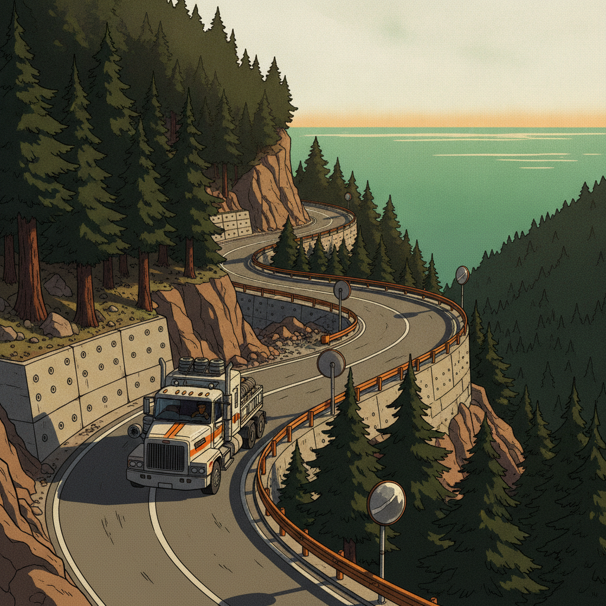
IV. Factions
Syndicates, KMTED, the proposed American presence, and the civilians who keep the city alive.
KUROGANE BAY / Tokyo Drift 3D gig-driver game
World law first: no faction is "the mafia." Each has a civilian economic origin — dockers, cabaret owners, fishmongers, drivers. Wars are over drivable logistics chokepoints (customs gates, cold-chain, elevator terminals, panel fields), never abstract turf. Every faction's street presence must read at 100 m visibility — banner colors, vehicle liveries, checkpoint architecture. Character law: no unmasked faces, ever. Tone law: the world takes itself 100% seriously — comedy emerges from systems only; nothing in this chapter is a punchline.
Reading key (per faction): LOOK (colors, insignia, mask/uniform design) · VEHICLES (livery) · TURF (where they read on the street) · THE WHEELMAN (how they hire, threaten, or tolerate the player).
A note on method. At 100 m through dust you cannot read a badge — you read silhouette geometry, luminance contrast, and material motion. Every faction below was designed to be identified by those three channels before you ever read its insignia. (Gemini design consultation digested throughout; consult notes in consult/gig-city/factions-design/.)
1. KAIUN-GUMI — 海運組 · The Ocean Transport Syndicate
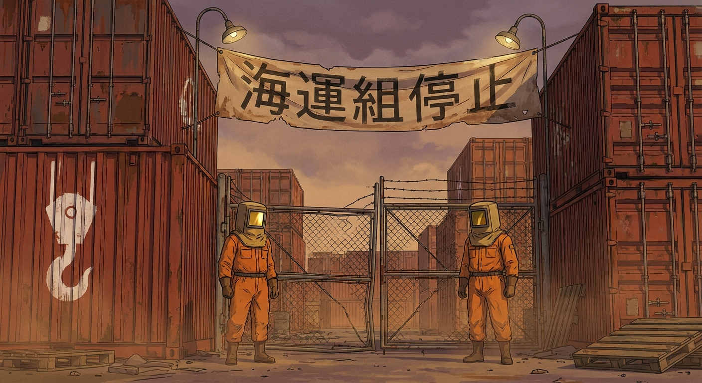
Freight Gate 4, Daikoku Piers. The banner says what the enforcers don't have to.
Origin. Demobilized naval logistics crews and dockers who cleared harbor wreckage after the war; the brute-force masters of the waterfront. (Echoes the real Yamaguchi-gumi's 1915 dock-labor origins — energy, not history.)
LOOK — top-heavy industrial bulk. Kaiun reads as mass: padded tobi trousers billowing above the knee, heavy tool harnesses, weighted cargo-hook bandoliers that distort the shoulder line — the silhouette is a square. Color discipline: high-vis sodium-orange canvas against oxidized primer-red; a horizontal "T-bar" of industrial reflective tape across chest and back, the highest-luminance marker of any faction, readable as a glowing orange band at 100 m. Masks: sandblasting hoods and dual-canister mining respirators with square tinted viewports — the square window is their signature. Insignia: the crane hook, stenciled massive in whitewash on container walls and painted on canvas checkpoint banners. Enforcers wear the hook as a steel badge hammered flat from cut crane steel, bolted through the chest strap.
VEHICLES — zinc-chromate workhorses. Rough flatbeds and yard telehandlers in chalked zinc-chromate yellow, mud splatter below the axle line, the hook stenciled on the tailgate. Their pursuit vehicles are harbor tugs of the road — slow, unstoppable, built to push: when a Kaiun truck decides you're leaving the pier, you're leaving. The Oyabun's own staff car is a black 1960s naval staff sedan, one anchor painted on the hood, left headlight permanently dead.
TURF — Daikoku Piers, outer anchorages, Freight Gates 1–9, near-shore panel arrays. Checkpoint architecture: stacked ISO containers forming a gate, counterweighted gantry arms as a portcullis, canvas banners between pipe frames. On the street you read them by the container canyon — Daikoku's corridor roads narrow between stacked box walls, and every entrance carries the hook banner. At night the gates are lit by hooded gooseneck lamps on the banners, not floodlights. The near-shore panel arrays are theirs by "maintenance fee": Kaiun boats among the floats, orange hulls against the black panel sea.
THE WHEELMAN — tolerated as cargo, tested as a driver. The cab is sovereign ground (canon guardrail 4): Kaiun does not murder neutral drivers — the harbor's gray cargo still needs wheels. They hire the player for off-manifest container pulls, midnight "re-labeling" runs past port inspectors, and docker medical emergencies. Their test is nerve: Lieutenant Kuga's muscle gigs ask you to move silent faction members and ram rival scouts blocking dock chokepoints. Oyabun Ryuzo "The Winch" Murata (gravel-voiced, missing left ear, respirator; never seen without his winch-hook walking stick) respects drivers who don't flinch at a gate and sinks cars over unpaid harbor tolls — his favor is a tariff, not a friendship. A Kaiun gig never asks you to be fast. It asks you to be punctual under weight.
2. GOKURAKU-KAI — 極楽会 · The Paradise Society
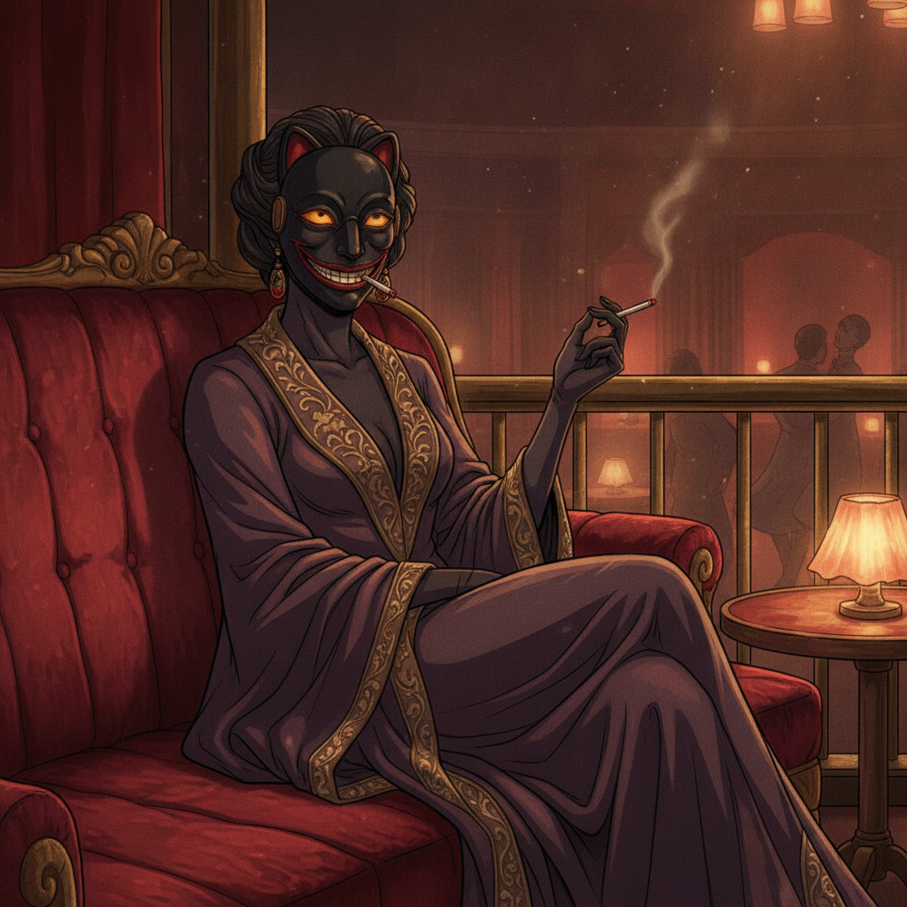
Madame Kanzaki, velvet office above the Starlight Lounge. The mask never comes off.
Origin. Post-war black-market cabaret rings — dance halls, hostess bars, and show business built on hospitality, synthetic vice, and spectacle. They own the night by owning the room.
LOOK — tall, vertical, fluid. Where Kaiun is a square, Gokuraku is a line: tailored Showa-era trench coats and wide-lapel duster jackets worn unbuttoned, hems flapping in the dust drafts; footmen carry heavy-gauge long-handled umbrella-canes. Color discipline: deep bruised plum and charcoal black, metallic gold-leaf trim that catches the haze — the gold is their 100 m read, glinting off coat hems and banner edges. Masks: the house signature — lacquered urushi-black full-face shields, sleek featureless ovals with integrated brass acoustic grilles that catch specular light. Madame Hanayo Kanzaki wears the masterpiece: custom-lacquered black with a painted red smile, worn over amber goggles; she smokes thin charcoal cigarettes through a filter-slot. Her people identify by the quality of the lacquer — footmen wear plain black; the inner circle wears the red smile. Insignia: the peony, hand-brushed in white enamel on velvet windbreak panels and folding checkpoint screens.
VEHICLES — lowered VIP sedans. Long, low, black: stretched brutalist barges with full-width vacuum-tube taillights and chrome half-masks on the drivers — Taro "Clean Towel" Inaba's immaculate club car is the archetype, white gloves on the wheel, scrubbing blood off leather between fares. No light bars, no noise: Gokuraku cars arrive silently and block your exit politely. Their checkpoint vehicles park across the alley mouth, hazard flashers clicking, a footman unfolding a velvet-paneled windbreak. The threat is entirely social: they never chase you; they simply make sure you have nowhere better to be.
TURF — Chidori Neon Strip, North Canal motel row. The one district where the dust thins enough for blade signs to cut through — vertical enamel-and-neon blade signs in cherry red and warm gold (canon: Chidori is the neon exception). Checkpoint architecture: folding velvet-paneled windbreaks, enamel peony plaques, hostesses' cloakroom mirrors at the curb — a checkpoint that looks like a doorway, which is the point. Their war with the Iron Wheel Union over the Chidori supply lines reads on the street as velvet screens vs. tire walls, a few blocks apart.
THE WHEELMAN — recruited as an intelligence asset. Kanzaki uses cab drivers as her gossip network and pays handsomely for eavesdropped passenger talk — the player's back seat is her wiretap. She hires VIP transfers, hostess escorts through rival turf, discreet drunk-exec pickups, and debtor chase-downs where the "chase" is mostly cornering someone socially. The relationship is courtly and transactional: she is never rude, never loud, and her favors compound like interest. Cross her and you don't get shot — you get unbookable: every club door in Chidori develops a sudden full-house problem when your car pulls up.
3. TSURU-KAI — 鶴会 · The Market Crane Brotherhood
Origin. Armed mutual-aid collective of fishmongers and grain peddlers who defended supply wagons during the Great Fuel Famine. The oldest civilian root of any faction — and the most ruthless, because hunger taught them arithmetic.
LOOK — grounded, triangular, wet. Low-slung and stable: stiff vulcanized rubber maekake aprons over padded thermal jumpsuits, white knee-high rubber boots — the highest-contrast element on the street, flashing against dark wet pavement at distance. Color discipline: stark marine-white and deep indigo-dyed hemp; the guild kamon (the crane) stenciled massive in whitewash across the apron belly for frontal identification. Fish blood and scale are part of the uniform — a clean Tsuru-kai enforcer is one who hasn't worked today, and nobody trusts one. Masks: marine salvage rebreathers and clear vinyl spray-hoods with external copper scrubbers — the copper tanks on the cheeks are their tell. Insignia: the crane kamon, brush-painted on every vertical surface in the ward in the morning and washed off the rivals' walls by noon.
VEHICLES — flat-front work trucks. Cab-over box trucks and refrigerated vans in indigo with white crane-roundel doors, vertical calligraphic nobori banners tied to the mirrors streaming behind them at speed — material motion as ID: no other faction trails cloth at 80 km/h. Fortifications on wheels: blue plastic fish-crate walls bound with hemp rope stacked on flatbeds. Their ice trucks run the dawn routes — catch them at 4 AM and the whole ward smells of the sea for a block.
TURF — Kamome Wholesale Ward, North Rail Depots. The wet-pavement labyrinth: seafood halls, cold storage, auction stalls, dust caked on every awning. Checkpoint architecture: interlocking fish crates and brine barrels bound with hemp rope, auction-hall gantries, the cold-chain gates — the war with Kaiun-gumi is fought at the gates of the cold-storage customs, and you read it on the street as crate barricades vs. container walls. The ward's morning soundtrack is the tuna auction chant under the hazard lamps; by 7 AM the streets are washed down and the Tsuru-kai aprons are hung out to dry — a hundred indigo flags marking claimed doorways.
THE WHEELMAN — hired as cold-chain infrastructure. Tsuru-kai gigs are timers with teeth: perishables on a clock (Kenji the Fish-King's million-yen tuna to Haibara before rigor mortis), restaurant resupply, cash-bag escorts before sunrise. They pay in produce and credit, not just yen: a driver in good standing eats from the auction floor and gets first call on the dawn runs. "Abacus" Kenjiro Sato (merchant apron, canvas dust hood, brass abacus — carried, not a gun) destroys rivals through debt, supply starvation, and razor-wire ambushes on supply avenues. He hires drivers the way he hires everything: on margin. Be late with his fish and the abacus beads click — and your next three gigs across the whole city quietly pay 10% less until the ledger balances. No threats. Arithmetic.
4. IRON WHEEL UNION — 鉄輪連合 · The Tetsurin Alliance
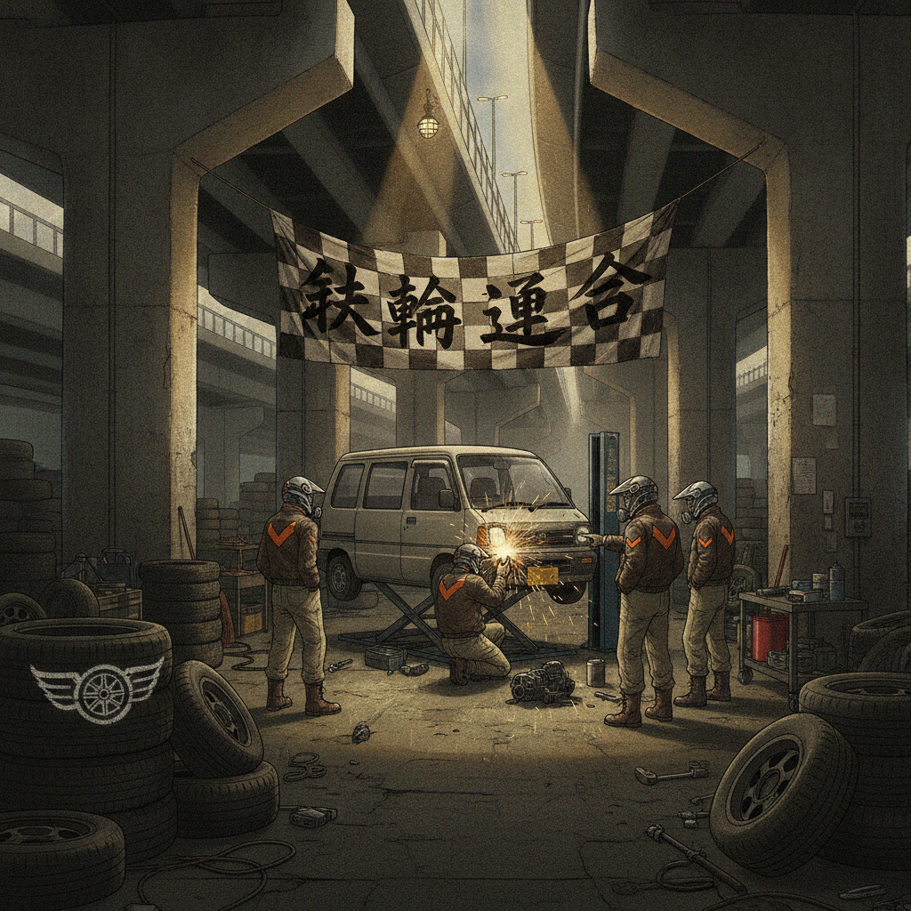
Repair Row, under the expressway. The checkered banner is older than the city charter.
Origin. Rogue courier drivers, midnight drag-racers, and wildcat chop-shop mechanics who refused the harbor syndicates. The only faction born on the road itself — and the player's natural early ally.
LOOK — kinetic asymmetry. Forward-leaning, patched, moving: tight technical leather and canvas, external spine-protectors, single-shoulder utility slings, loose cargo straps that trail like bosozoku ribbons. Color discipline: asphalt gray broken by diagonal hazard-orange chevrons — but only on the right limbs, a directional-tracking convention from the racing days: in the dust you can tell which way a Union rider is facing by the chevron side. Masks: stripped motocross full-face helmets mated to industrial twin-cyclone dust filters — an insectoid, predatory profile; the twin filter cones are their silhouette signature. Insignia: the iron wheel itself, spray-stenciled on tire walls, lift arms, and garage doors in whitewash that never quite dries.
VEHICLES — raw-weld patchwork. Kei vans and scramblers with mismatched welded panels, exposed external oil-coolers, high-mounted yellow rally spotlights (the dust demands them). The livery is process: primer patches, weld beads, stenciled part numbers. No two Union cars match, and that's the point — the faction's visual identity is visible maintenance, the honest opposite of every other faction's uniform. The shop trucks carry the checkered banner tied to the antenna mast.
TURF — Kotobuki Slums & Repair Row, the under-expressway ring, South Canal shallows, the Nagisa waystation. Checkpoint architecture: tire walls, hydraulic scissor lifts as gates, hand-painted checkered banners strung between support columns. The under-expressway ring is their cathedral — tin-blue shanties under concrete, filter-rinse bays steaming, pirate radio masts on the girders. At the Nagisa waystation, the banner flies over the only fuel pumps on the long highway. Their rolling skirmishes with KMTED and Gokuraku extortion squads read on the street as tire-wall barricades appearing overnight and vanishing by dawn.
THE WHEELMAN — home. The Union is where gig drivers belong: the union card stamped on paper, upgraded at chop shops; parts-fetch timers, no-questions parcels, getaway runs, dust-filter service stops. Boss Tetsu "Camshaft" Ogata — grease-covered savant, steel-rod spine, welder's mask pushed up over a respirator, speaks in mechanic-jargon bursts — runs the garages like a temple and the roads like a sacred commons: drive well and earn his respect; try to regulate his garages and find your brake lines cut. Mariko "Zero-Gauge" Katsu's speed-trial gigs are the Union's entrance exam. The Union never threatens the player — it tests them, and the test is always the same: drive like the road matters.
5. KMTED — Kurogane Municipal Traffic Enforcement Division
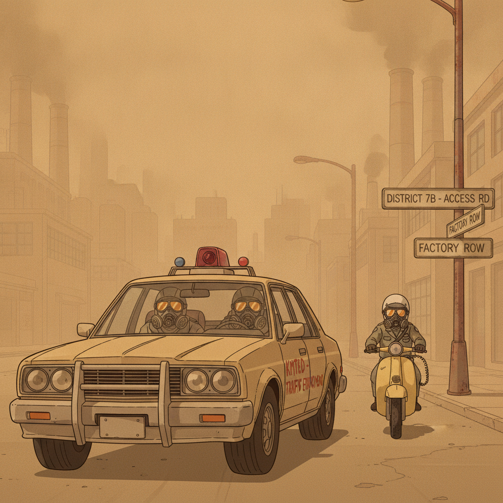
Factory Row, Section B-7. The cruiser wants a confession; the scooter wants your meter money.
Identity. Bored, underpaid municipal officers in heavy, understeered pursuit sedans with mechanical roof sirens, dashboard dispatch radios, and push-bars. They don't shoot — they use mechanical leverage and paperwork: pull alongside, scrape paint, pin you against street furniture until the chassis is immobilized, then write you into the next fiscal quarter.
LOOK — municipal beige. Waxed-canvas uniforms gone gray with dust, peaked caps with respirators clipped to the brim (the masked kōban keeper's descendant), pigskin work gloves, brass whistles. Color discipline: municipal putty-gray with a single hazard-orange belt stripe — the stripe is the rank and the warning at once. Masks: standard-issue boxy respirators with amber lenses; officers stencil their badge numbers on the filter housing. Insignia: the KMTED roundel — a split-flap board glyph — stenciled on cruiser doors and kōban dust-lock booths in municipal blue, half-sanded off by the dust within a month.
VEHICLES — understeer made steel. Heavy 1970s pursuit sedans: mechanical roof siren (a chrome horn you can hear winding up through the dust), push-bar bumpers, hand-stenciled KMTED door markings, dented fenders, always one headlight dimmer than the other. Two-car pinning is the whole doctrine: solo cruiser tailgates and loudspeaker-barks (Heat 1: THE TICKET), two cruisers box and pin at toll bridges (Heat 2: THE RAM), heavy paddy wagons ram head-on with iron spike barricades at district borders (Heat 3: SEIZURE). And then there is the Meter Maid: unnamed, on a three-wheeled scooter, white helmet, mirrored goggles, respirator, ticket book on a coiled cord. Never speaks, only writes. The scooter is silent; the ticket flutters under your wiper before you notice she was there. The city's most feared antagonist is a parking enforcer — no writing required.
TURF — everywhere the municipal map says it is. Kōban dust-lock booths at major intersections (with the pneumatic bribe-chute slot), toll plazas, district borders. KMTED authority ends at corporate district borders — crossing a toll jurisdiction sheds heat, which is why every driver learns the border lines by heart. Their street presence is the amber beacon: blinking hazard beacons on poles at every intersection they claim, iron mirrors on poles, enamel sector signs. The kōban keeper never leaves the booth during storms; authority in Kurogane Bay is a sealed fixture, not a patrol.
THE WHEELMAN — the friction in the machine. Heat accrues through visible friction — tearing down pneumatic poles, blowing toll plazas, speeding past kōban, contraband multiplying everything — never for mere alley speeding. The player sheds heat by breaking line-of-sight for 8 seconds and killing the headlamps under an elevated rail bridge, crossing a toll jurisdiction, or firing a bribe envelope into a kōban's pneumatic receiver. Inspector Kenichi Dan (demoted traffic detective, cracked leather respirator, one amber lens missing) is the system's chaos agent: while he's riding as your fare, heat locks to zero — patrols salute, toll gates open — but he orders you to commit violations to settle personal beefs, and carrying syndicate contraband with him in the cab doubles the payout until heavy chassis damage triggers his glovebox contraband check. The KMTED is never the villain. It's the rent.
6. AMERICAN ARMY PRESENCE — PROPOSED, NOT CANON
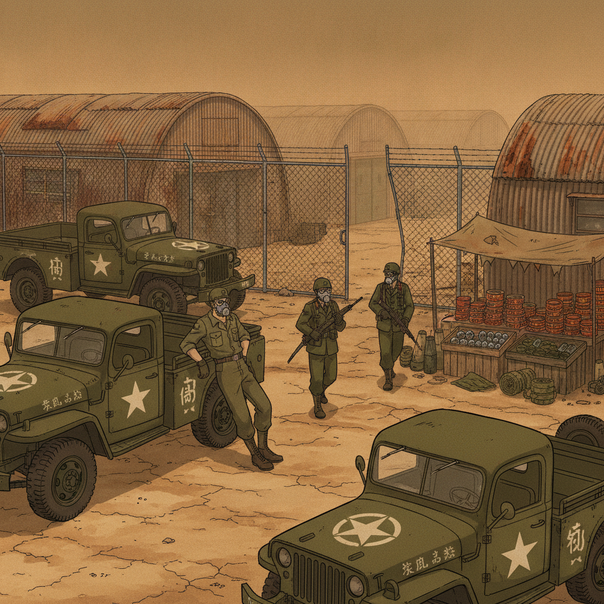
The treaty-port depot at the Daikoku perimeter. The fence is peeled open and nobody fixes it — that's the whole relationship.
Status: PROPOSED — pending Craig's approval. This section is a design proposal, not canon. If approved, it slots into the bible as a sixth power at the harbor's edge: a residual US military logistics footprint under a port-access treaty — present, armed-light, economically embedded, culturally distinct.
Identity. Post-war energy, not occupation: a residual American logistics presence — port-access treaty rights, a surplus depot, joint-patrol MPs with the municipal police. They are here because the treaty says the harbor stays open, and they stay because the PX is profitable. The design rule: strip every tactical posture. These are not conquerors; they are tired logisticians in a dust storm, leaning on tailgates.
LOOK — olive-drab exhaustion. Slouched, wide-shouldered, loose: unbuttoned OG-107 utility shirts over faded PT tees, rolled sleeves, canvas field jackets, soft utility caps tilted back — the anti-silhouette to the upright, layered Japanese workwear (indigo hanten, jika-tabi, cycling caps) around them. Dust masks are the equalizer: Americans wear repurposed olive-drab tank-crew dust masks or printed cotton bandanas, stained yellow around the mouth — the one place both sides look the same. Color discipline: matte olive-drab FS 34087 against ochre dust is the 100 m read — nothing else in the city is that flat green. Markings: machine-cut US stencil typography ("LIFT HERE", "CAUTION 24 VOLTS") colliding with hand-brushed white enamel kanji for regional clearance permits and cargo manifests — typographic pollution as faction ID. Scuffed white five-point stars, oil-stained, half-covered by Japanese inspection decals.
VEHICLES — workhorses, not war machines. M35 deuce-and-a-halfs and Dodge-style 1.5-tons in sun-chalked matte olive drab, red-reflector mud flaps, stenciled tailgates. The signature: the joint-patrol jeep — painted matte white with a central olive-drab stripe, hand-painted bilingual hood lettering (JOINT DISCIPLINARY / 憲兵), weathered municipal plates — carrying one American shore-patrol rating and one Japanese officer side by side. Rifles stay slung or racked; the GI's duty belt carries a snap-secured sidearm with the flap closed and the lanyard dangling. The depot trucks never hurry. Nothing about them hurries.
TURF — the treaty-port edge. The depot: corrugated Quonset huts oxidized orange-brown, chain-link perimeter peeled open and tied back with copper wire — the fence is a formality and everyone knows it. Rusted blue-and-white US warning signs ("PROPERTY OF U.S. GOVERNMENT") serve as backing boards for riveted local enamel ads: Asahi Beer, National Radio, Peace cigarettes. Low wood-and-canvas stalls crowd the fence — the PX black market: cardboard crates of SPAM, Maxwell House tins, dry-rotted canvas webbing, JAN-grade vacuum tubes trading for fresh daikon, bottled kerosene, machine bearings. Their war is with no one; their friction is with everyone — the depot is the one place all four factions' buyers stand in the same line, pretending not to see each other.
THE WHEELMAN — the gray-market supply line. Surplus vehicles and parts feed the Kotobuki chop shops directly: olive-drab aircraft cowlings become custom engine hoods on three-wheelers, aircraft-grade aluminum gets pop-riveted onto delivery flatbeds. The player meets the Americans as customers and creditors: hauling "misplaced" PX inventory to Repair Row, running sealed crates the depot quartermaster can't manifest, driving the shore-patrol's laundry and the officers' club liquor. Payment is half yen, half surplus scrip — redeemable for parts no one else can get. The risk is jurisdictional, not violent: get caught with depot goods by KMTED and the paperwork takes a month; get caught by the quartermaster's own audit and you're just... uninvited. The Americans don't punish. They de-list.
Why this belongs (the proposal's case). The bible's factions all have civilian economic origins — the Americans' origin is treaty logistics, which is civilian enough to fit the design law and distinct enough to add a new color (olive drab) and a new economy (surplus) to the war map. Their chokepoint: the depot gate and the PX fence line — whoever controls the surplus flow controls Kotobuki's parts prices. Craig's call.
7. CIVILIANS — the ordinary lives the gigs reveal
The city is not its factions. The gigs are a cross-section of everyone the dust didn't stop.
The rule of the street: ground-level foot travel without a filter suit is a municipal felony, so civilians serve the drive-up economy — pneumatic capsule pods, curbside ticket booths, drive-up ramen windows, cargo bays where masked workers lean into your window. Every civilian interaction happens through glass, a hatch, or a dust flap.
How they dress. Working canvas and waxed cotton, weighted hems, respirators clipped to every collar. Shopkeepers wear the dust-flap noren's twin: a weighted canvas apron with the shop's mon stenciled in whitewash. District dialects in the weave — Kamome's indigo, Kotobuki's tin-blue patches, Tenjin's charcoal wool that never quite loses the office crease. Everyone's gloves are fingerless pigskin; everyone's boots are rubber. Wealth reads as cleanliness: a Haibara client's lace-trimmed dust veil is white because someone else washes it.
How they signal through the dust. The noren is the weather UI — curtains hang inward when the pressure drops, and the whole street reads the storm in the canvas. Enamel plates are the persistent layer: quest-relevant signs are always enamel, because sand-blasting keeps enamel legible while paint dies. At night, hooded gooseneck incandescent lamps over doorways — never floodlights. And the horn language: two short blasts for the ramen window, one long for the kōban, the Harbor Tram's compressed-air horn for everything else.
The cast of the ordinary:
- Auntie Shizue Miyamoto — chief dispatcher, Asahi Radio Cab & Delivery. Olive dispatcher's coverall, vintage telephone-operator headset worn OVER a canvas dust hood, cigarette in a filter-slot. Barks orders like artillery; treats drivers like wayward sons. The primary early-game gig source — her "personal favors" spiral into syndicate messes.
- Ramen-stand keepers — the drive-up window is the city's living room. Steam, lacquered bowls passed through the hatch, the keeper's mask fogging at the edges. The good stands are known by their queue of parked cabs.
- Kōban keepers — the masked fixture in the dust-lock booth, pneumatic message tube at the elbow. Authority you can bribe through a slot.
- Shopkeepers behind dust-flap noren — swept dust piles by every door each morning, the day's first ritual. They sell to headlights: goods held up to the window, yen passed through the flap.
- Mrs. Yamashita — 80, neat kimono, lace-trimmed dust veil, barley-tea candy through the window. Every Tuesday 11:15 AM sharp, a slow gentle ride through gang-war zones to her husband's grave. The moral heart of the world — and the gig that teaches you the city's real speed limit.
8. FACTION READABILITY AT 100 M — the cheat sheet
| Faction | Silhouette | Color read | Motion read | Architecture |
|---|---|---|---|---|
| Kaiun-gumi | Square, top-heavy | Sodium-orange T-bar | Slow, unstoppable | Container gates, hook banners |
| Gokuraku-kai | Tall, vertical line | Gold-leaf glint | Silent arrival, velvet screens | Folding windbreaks, blade signs |
| Tsuru-kai | Low triangle | White boots, indigo | Nobori banners streaming | Crate barricades, cold gates |
| Iron Wheel Union | Forward lean | Orange chevron (right side) | Patched, rattling, fast | Tire walls, checkered banners |
| KMTED | Upright, belted | Putty-gray + orange belt | Heavy, understeered | Kōban booths, amber beacons |
| Americans (proposed) | Slouched, loose | Flat olive-drab | Never hurries | Quonset huts, peeled fence |
| Civilians | Varied, aproned | District canvas weaves | Queues of parked cabs | Noren flaps, enamel plates |
9. OPEN QUESTIONS (pending "BIBLE DELTA" — for Craig)
- American Army presence — approve, amend, or cut? If approved: name for the depot district? Formal treaty name? Does the quartermaster get a cast entry?
- Tsuru-kai visual mock — no bespoke mock was commissioned for the fishmongers this round (5-piece budget spent on Kaiun, Kanzaki, KMTED, Iron Wheel, Americans). Commission a Kamome dawn-auction piece next round?
- Gokuraku-kai LED question — the consult suggested harsh light bars and LED arrow boards; canon bans digital-era emissives (identity plan §8). The chapter specifies vacuum-tube taillights and incandescent only. Confirm: no LED emissives on faction vehicles, ever?
- Faction war phases vs. art — the bible's war map ticks (blockades move, terminal control changes). Does the art book need a "war-phase livery" variant set (battle banners, blackout trims) or does one look per faction suffice?
- Civilians' Upper City look — this chapter covers Lower City civilians. Do Haibara Heights residents get a separate civilian design pass (clean sunlight, no respirators outdoors?), or does the mask law hold above the cloud too?
- Meter Maid's scooter spec — three-wheeled, silent. Electric? (Tech ceiling is Showa-analog — a silent electric scooter may violate it. Clockwork? Pneumatic?) Needs a design call before vehicle modeling.
Mocks delivered
mock-kaiun-checkpoint.png— Kaiun-gumi dock checkpoint, enforcers, hook bannermock-kanzaki-mask.png— Madame Kanzaki lacquered-mask portraitmock-kmted-cruiser.png— KMTED cruiser + Meter Maid scooter (mask-law compliant pass)mock-ironwheel-garage.png— Iron Wheel chop-shop garage, Boss Tetsumock-american-depot.png— American surplus depot, PX stalls, joint patrol (mask-law compliant pass)
All five opened and verified: 80s-anime cel, warm dust palette, no unmasked faces, no neon soup.
Mock gallery
V. World Map, Lore & Timeline
District layout, the economy as revealed through gigs, and three eras of history.
The city as the gigs reveal it
Canon: ~/workspace/game-design/gig-city-world-bible.md (v2). This chapter is the story the player learns from behind the wheel — never a codex, never a lecture. History law applies: nothing here is historically accurate; it is post-war in energy and retro-futurist in fact. Nobody may correct it against real history.
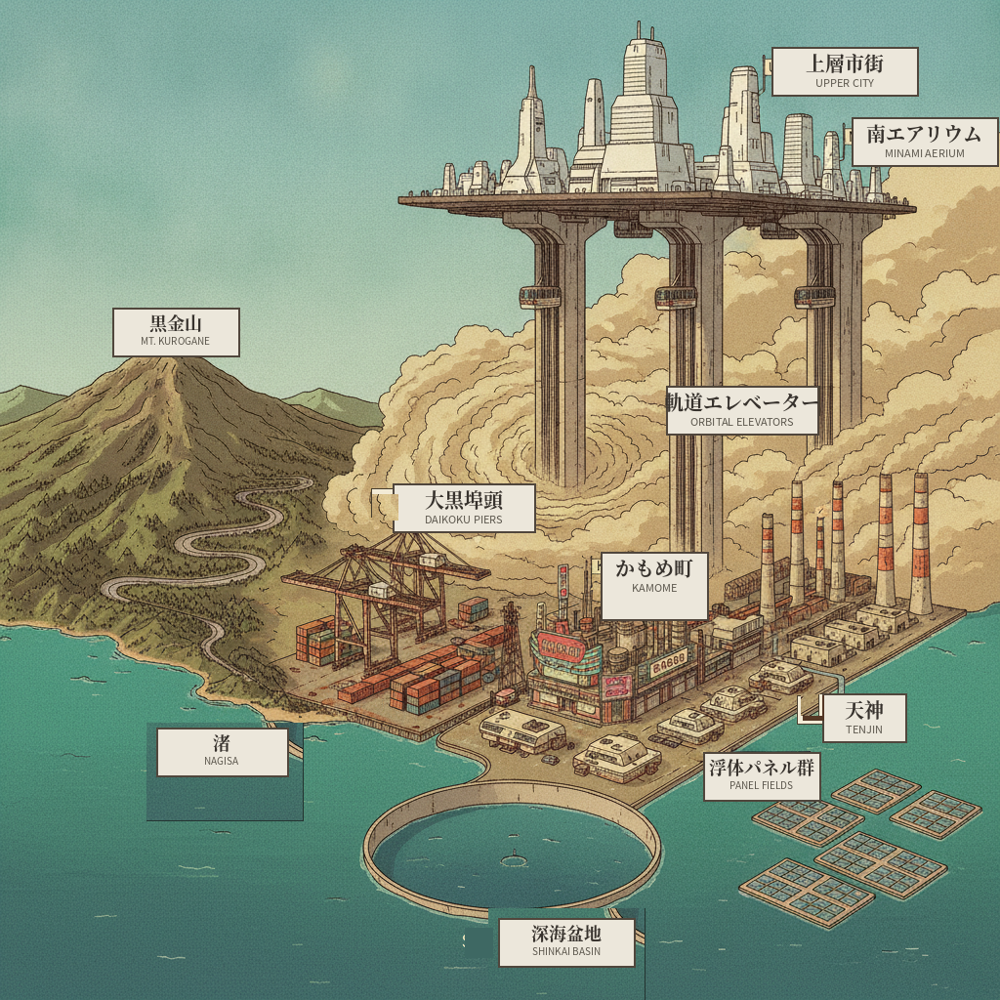
The three strata: the Aerium above the cloud deck, the Trench below, the Outskirts road west. The elevator pylons are the city's spine.
A. WORLD MAP — Layout Spec for the Map Artist
The governing rule: one bay, three strata, three gates between worlds
Kurogane Bay is a port city built around a single deep-water bay. The bay opens to the south; the city wraps its western and northern shores. To the west rise the pine mountains of Mt. Kurogane and the Nagisa Coast beyond them. The entire city is stratified vertically: the Lower City drowns in dust at ground level, the Upper City floats above the inversion layer, and the two are joined by exactly three car-elevator shafts. Draw the map as a cross-section first, a plan view second — the vertical dimension is the city's identity.
LOWER CITY ("The Trench") — plan view, west to east
The Lower City is a crescent pressed between the mountains (west), the bay (south/east), and the North Canal (north, defining Chidori's edge). Reading west → east along the waterfront:
- The West Gate — where the Nagisa highway enters the city. A single toll gantry under Minami's concession, flanked by Iron Wheel scouts. This is the only road out; it is also the city's softest ambush point. The gate faces the mountain switchbacks.
- Kotobuki Slums & Repair Row — west-central, sunken. The district sits in a basin beneath the elevated tollway ring's support piers; the expressway passes overhead on concrete stilts and the shantytown grows in their shadow. Dust is thickest here. Adjacent east: the Shinkai haul roads; adjacent north: the canal shallows (South Canal, where Iron Wheel boats work). Key locations: the train-shed garages (Mariko's shed among them, an abandoned locomotive depot), the filter-rinse bays (the dust tithe's churches — rows of pressure-washer stalls under corrugated awnings), surplus markets, pirate-radio masts on the stilts.
- Daikoku Piers — the southern waterfront, running the full length of the bay's western shore: miles of gantry cranes, container stacks, open-flame shipbreaking yards. The quay is divided into Freight Gates 1–9, numbered west to east. Gates 1–3 (west) are Kaiun-gumi stevedore turf; Gates 4–6 are the contested customs gates where Kaiun and Tsuru-kai fight over the cold-chain; Gates 7–9 (east) are the panel-field service docks. Offshore, the bay is carpeted with floating panel arrays in geometric grids to the horizon, with service catwalks and maintenance boats — contested between Kaiun-gumi (maintenance fees) and KPC (power revenue). North of the piers: Kamome; inland (north-east): Shinkai.
- Kamome Wholesale Ward — north of the Daikoku quay, a wet-pavement labyrinth of seafood halls, cold storage, and auction stalls. This is the food throat of the city: everything edible passes through here before sunrise. Adjacent east: Tenjin (the paper-money district its cash flows into); adjacent north-east: the North Rail Depots (Tsuru-kai turf, dead freight yards); adjacent south: the contested customs gates at Daikoku 4–6. Kamome auction halls are the district's anchor — the dawn tuna auction is the city's loudest room.
- Shinkai Basin — south-east inland, the refinery zone. Sol-88 cracking plants, chemical canals lit by flare stacks, bulk-plastics works. The dust source: visibility at its worst, the murk here has a sulfur tint. Bordered west by Kotobuki (the gray-fuel pipeline runs Shinkai → Kotobuki chop shops; this is the shortest smuggling corridor in the city), north by Tenjin's southern edge, south-east by the Shinkai cracking plants proper and KPC's security perimeter. KPC security holds the plant compounds; Kaiun-gumi leans on the fence lines.
- Tenjin Mid-Corridor — dead center, the city's brutalist spine: a north–south canyon of trading houses, banks, and dispatch offices. This is the only district every other district must pass through — which is why the wars are fought at its edges. Its north end is anchored by sky-elevator Terminal 2 (the corporate gate; Highline Adaeze's domain). Key locations: the Tenjin dispatch offices (Asahi Radio Cab's headquarters among them), the shell banks that receive Chidori's cab-laundered cash, the customs clearing houses. Contested by municipal patrols paid off by corporate security — the only district where the fighting is done with injunctions instead of pipes.
- Chidori Neon Strip — east of Tenjin, across the North Canal: multi-tiered red-light alleyways, cabarets, capsule motels, pachinko palaces. The canal is crossed by three bridges — the district's chokepoints, each watched by Gokuraku-kai spotters. The dust thins here enough for blade signs to cut through; this is the one Lower district with authored night lighting. Key locations: the Chidori Starlight Lounge (Madame Kanzaki's velvet office above it), the North Canal motel row. Adjacent north: the North Rail Depots (supply lines into Chidori, the Gokuraku/Iron Wheel proxy-war corridor).
UPPER CITY ("The Aerium") — above the cloud deck
The Upper City is a plateau of megastructures floating in clean pale sunlight above the ochre cloud sea. The three elevator shafts rise from the Lower City and pierce the cloud deck; their upper terminals open onto the skyway ribbon — curvilinear viaducts and banked ring roads linking the arcologies.
- Minami Aerium — central, the corporate megastructure plateau: white concrete towers, skybridges, 360° plazas. Houses sky-elevator Terminals 1 & 3 (the upper ends of the two commercial shafts) and Minami's toll HQ — the Metropolitan Transport Board's headquarters, the building that taxes every wheel in the city, vertically. The Aerium ring road connects all three shaft-tops.
- Haibara Heights — the eastern cliffside: terracotta-roofed estates and executive villas above the cloud layer, private gardens, the dust a distant amber sea below. Reached from the Aerium by the eastern skyway ribbon — no elevator lands here directly, which is the point: the tycoons' demilitarized zone is one removable bridge away from everything. Private security; no faction holds it.
Terminal numbering, settled for the artist: each of the three shafts is a paired installation — a Lower terminal and an Upper terminal on the same cable line.
- Shaft 1: Lower base in Daikoku's east end (panel-field service side) ↔ Terminal 1, Minami Aerium (commercial freight).
- Shaft 2: Terminal 2, Tenjin north end (corporate gate) ↔ upper customs esplanade on the Aerium's south face.
- Shaft 3: Lower base in Kotobuki's under-expressway basin (the working shaft — broken lifts, union traffic) ↔ Terminal 3, Minami Aerium (west freight deck).
Canon names Terminals 1 & 3 by their Aerium ends and Terminal 2 by its Tenjin end; the pairing above is the art-book's recommended resolution (see Open Questions).
OUTSKIRTS ("Nagisa") — the single road west
One highway leaves the West Gate, climbs the Mt. Kurogane switchbacks (mountain logging crews, the road's only company), crosses the coastal viaduct over the teal sea, and ends at the Nagisa waystation — an Iron Wheel fuel-and-filter stop with a beach beyond it. Nagisa Coast: pine mountains, a vivid teal-green sea (§B), fishing boats, the city's skyscrapers a hazy silhouette across the water (skybox — never geometry). Unaligned territory: hermit fishermen, mountain crews, the Union waystation. The waystation is the long-haul driver's church, garage, and rumor exchange.
Chokepoints (the war is fought at these points, never on abstract turf)
| Chokepoint | Who bleeds for it | Why it matters |
|---|---|---|
| Elevator Terminals 1/2/3 | Everyone, endgame | The only way up; whoever holds a terminal taxes the vertical economy |
| Daikoku Freight Gates 1–9 | Kaiun-gumi vs. port inspectors | Everything imported enters through nine numbered gates |
| Kamome cold-storage customs gates (Daikoku 4–6) | Kaiun-gumi vs. Tsuru-kai (blood feud) | The food throat: who taxes the cold-chain taxes breakfast |
| North Canal bridges (3) into Chidori | Gokuraku-kai vs. Iron Wheel (proxy war) | The vice supply lines |
| Shinkai→Kotobuki gray-fuel corridor | KPC security vs. Iron Wheel siphoners | The underground's fuel artery |
| West Gate toll gantry | Minami's board vs. everyone | The only road out; the only road in |
| Aerium ring-road junctions | Minami's corporate security vs. corporate rivals | Upper City movement is tolled per junction |
Faction control, at a glance (present day)
- Daikoku Piers: Kaiun-gumi (Gates 1–6); panel fields contested Kaiun vs. KPC
- Kamome: Tsuru-kai (auction halls, cold storage, North Rail Depots)
- Chidori: Gokuraku-kai (strip + motel row)
- Tenjin: contested — municipal patrols on corporate retainer
- Kotobuki: Iron Wheel Union (train sheds, rinse bays, under-expressway ring)
- Shinkai: KPC security (plants), Kaiun-gumi leaning on the fences
- Haibara: tycoon DMZ, private security
- Minami Aerium: Councilman Minami's transport board + corporate security
- Nagisa: unaligned — Iron Wheel waystation, fishermen, mountain crews
The endgame war map
Faction war phases move blockades and change elevator terminal control — the terminals are the city's tollbooths, and holding one means taxing every crate, fare, and filter that crosses the dust layer. The war map is legible from the driver's seat: a terminal under new control changes its banners, its queue bribes, its inspection strictness, and the ROUTE-88's toll brackets before any dispatcher tells you why. The endgame is not a boss fight; it is the week all three terminals change hands at once.
B. LORE — The City as the Gigs Reveal It
Nothing in this section is told to the player. Everything is learned from the passenger seat, the payout chit, and the road. The world takes itself seriously; the absurdity arrives when high stakes collide with a Tuesday shift.
How the player learns the economy: the settlement chit
Every gig ends the same way: the ROUTE-88's brass slot spits a printed settlement chit, and the deductions are itemized before the net. The player does not read the economy in a codex — the economy taxes them, line by line:
- Gross fare — what the client paid.
- Sol-88 excise — KPC's per-liter cut, printed as a government stamp. When faction wars spike the fuel price, this line grows and the player feels the war in their pocket before any dispatcher mentions it.
- Dust Tithe — the filter-rinse levy, the radiator-scrub fee, the sealed-bearing surcharge. Every Lower City mile accrues it; Kotobuki's rinse bays are where you pay it in cash instead of performance.
- Roadbed access tariff — Minami's tolls, per district crossed, per stratum changed. The elevator toll is its own line, and it is always the largest.
A driver who never reads a word of lore still learns the city's power structure from these four lines: KPC owns the fuel, the dust owns the car, Minami owns the road. The settlement chit is the city's autobiography, printed after every job.
The seven money flows, as jobs
1. The Harbor Siphon. Who hires you: a burner terminal at Daikoku Gate 5 texts a one-line offer that only appears when your tank drops below a quarter — the dispatch algorithm can smell desperation. What you move: unregistered cargo from a midnight van to a Kotobuki chop shop, gravity-fed Sol-88 straight into a hidden auxiliary tank. What you learn: the car goes tail-heavy and the exhaust smokes black; KPC's official ledgers write off the missing fuel as "seabed leakage," and the siphon crews are the leak. The harbor doesn't get robbed. It gets reconciled.
2. The Synthetic Bloodline. Who hires you: Mariko "Zero-Gauge" Katsu, who needs gray-market distillate for a speed trial and doesn't ask where you got it. What you move: siphoned Sol-88 in jerrycans — volatile, sloshing, and chemically wrong. What you learn: the engine knocks, the throttle lags, backfires draw KMTED patrols, and the fouling clogs your filter twice as fast (the Dust Tithe again). The monopoly isn't just enforced by KPC security. It's enforced by chemistry — the city's engines were built around Sol-88's burn rate, and everything else is a confession.
3. The Morning Wholesale Squeeze. Who hires you: Kenji the Fish-King, 4:40 AM, a 220-kilo bluefin that must reach the Grand Bay Hotel before the press breakfast — or a Tsuru-kai dispatcher with six crates of company-store produce and a route through a picket line. What you move: perishables on a melting clock; the ice kills your rear traction as it thaws. What you learn: Tsuru-kai doesn't sell food, it sells permission to eat — the auction, the synthetic-ice monopoly, the merchant loans are one machine, and the blockade at the cold-storage customs gate is the Kaiun-gumi trying to starve it. Cross the picket line and the payout clears; dump the cargo to the strikers and the payout dies — but a new dispatcher, one who never uses a name, starts offering you untracked work.
4. The Neon Wash. Who hires you: Taro "Clean Towel" Inaba, or a Gokuraku bagman who never introduces himself. What you move: nothing, at first — you drive loops through Chidori with a silent passenger while a mechanical cash-counter clicks in the back seat, and at every third loop the passenger feeds a brick of harbor cash into your meter as an "overpaid fare." What you learn: there is no wire transfer in Kurogane Bay, so dirty money gets laundered one cab ride at a time, and your car is the washing machine. Madame Kanzaki's intelligence network runs on the same principle: cab drivers hear everything, because passengers confess to the rear-view mirror.
5. The Paper Chase. Who hires you: Shinji "Slippery" Uno, three gold watches, sweating through a paper mask. What you move: bearer bond certificates and blackmail photographs in a briefcase that may not pass through corporate scanner grids — Tenjin's arteries are laced with them. What you learn: paper is the only true wealth left, because the paper can't be scanned, seized, or traced — only driven. You learn the drainage canals and service alleys the way other drivers learn shortcuts, because the main roads belong to the scanners. When the corporate recovery trucks come, they don't shoot. They pit-maneuver you into a contract default. Bureaucracy, with push-bars.
6. The Vertical Arbitrage. Who hires you: "Highline" Adaeze Okafor — or rather, the queue outside Terminal 2, which is its own employer. What you move: Lower City goods sealed for the Upper market (3× after decontamination), Upper City tech bound for Kotobuki (filters, compensators, sealed trunks — 5× below). What you learn: the elevator toll is priced with surgical precision — always just cheaper than the cost of the alternative. The alternative is the broken industrial lift in Kotobuki (30% mechanical failure, or a syndicate ambush) or the lead-lined smuggler trunk (decon-proof, but the mass changes your drift physics for the worse). Every driver does this math at the terminal gate, every day. The arbitrage isn't a secret. It's the tollbooth.
7. The Dust Tithe. Who hires you: your own engine. What you move: yourself, to a rinse bay, before the filter chokes. What you learn: the filter gauge is the city's slowest countdown — boost dies as it saturates, and the rinse costs money or minutes, always both. Kotobuki's rinse bays are the most recession-proof business in Kurogane Bay because the dust is the one tax nobody can dodge, bribe, or outrun. The bay attendants stamp your union card like priests stamping a pilgrim's passport.
The three tycoons, as the work introduces them
The player never meets the tycoons. The player meets their paperwork — and their fares.
Baroness Chiyo Moriyama (land, tariffs) arrives as a fare: a tariff assessor in a sealed car who rides with you from Daikoku to Tenjin auditing your cargo against her schedule, stamping each crate's worth with a brass seal. The Kaiun-gumi think they run the harbor; the chit they pay her every month says otherwise. You learn she owns the ground the docks sit on the day a syndicate blockade evaporates — not because anyone fought, but because her office re-zoned the street it stood on.
Director Hidetaka Vance (KPC, the Sol-88 monopoly) arrives as an escort contract: ride shotgun — figuratively — for a KPC engineer convoy through Shinkai, while whistleblower extraction gigs offer you life-changing money to drive the other way. The choice between the convoy and the engineer is the city's thesis in one gig: the fuel is the blood, and everyone is deciding whose heart it pumps for.
Councilman Goro Minami (tolls, the suppressed rail, the Minotaur) arrives as infrastructure. You meet him every time you pay a toll, every time the ROUTE-88 shows a dead rail line as a dotted scar on the map, every time a shell-company shuttle gig asks you to ferry stranded factory workers from a welded-shut rail gate to the docks because his private bus fleet "broke down" again. The workers talk in the back seat. They always talk. Minami is never fought. He is driven around — which is slower, costs more, and is the entire game.
The sea, as the gigs keep not explaining
The teal sea is never a mission objective. It is the thing at the end of the long-haul: the Nagisa run pays less per mile than city work, and drivers take it anyway, because the dust ends at the coast and the water is the wrong color and nobody can stop looking at it. The Iron Wheel waystation keeps a logbook of the nights the water glows — a driver can read it while the tank fills, and the entries disagree with each other and with KPC's bulletins, and that is the whole of it. Old fishermen at the beach terminus will tell you, unasked, that something woke up down there. KPC's public line is copper runoff. The logbook's last page is always blank, waiting for tonight. The mystery is never resolved. It is the city's exhale, and exhaling doesn't require an explanation.
The laws, as friction
The Kuro-Kiri dust ordinance is why every NPC interaction happens through your window: foot travel without a filter suit is a felony, so the docker waves you in from the curb, the hostess ducks into the back seat, the mechanic leans into your window. The street is a machine trench; your cab is your life-support capsule. You learn this the first time a fare refuses to walk ten meters to your bumper.
Tonnage Priority is why intersections have no lights: right-of-way goes by gross vehicle weight, announced by blinking amber beacons and iron mirrors on poles. You learn it the first time a zaibatsu hauler doesn't brake for you — it never brakes for you — and the horn becomes a verb: kei vans scatter when you honk inside twelve meters, and scattering them is sometimes the job.
The cab is sovereign ground is why syndicate blockades wave you through — the food, the fuel, and the vice move through neutral drivers, and everyone knows it. You learn the exact shape of this sovereignty the first time you carry contraband through a blockade that would have waved you through: the wave becomes a search, the search becomes a chase, and the rule reveals its boundary. Neutral is a license. It can be revoked.
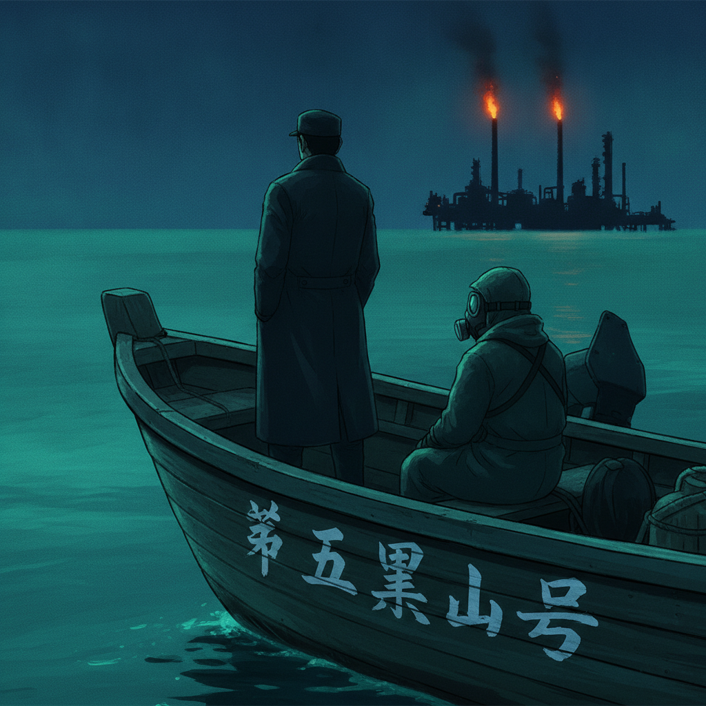
Deep-sea rigs on the horizon; the water lit from within. KPC called it copper runoff. The fishermen never did.
C. TIMELINE — A Civic Artifact, Not a Wiki
How to read this: the city dates itself by winters since the Surrender and by municipal cycles — never by calendar years, which belong to a history that never happened here. Entries are drawn from union minutes, KPC bulletins, ordinance ledgers, and garage relic walls (§5.9: the city curates its own past — every chop shop keeps an enamel plate from a dead business and argues about what the sea used to look like). What the clerks didn't write down is gone. That is the point.
ERA ONE — THE SCRAPE (the Surrender → ~the 12th winter)
Mud, bilge water, and salvage. The city is horizontal: everything that matters floats or sinks.
Winter 0 — the Surrender. The harbor is a wreck-yard: sunken destroyers, snapped cranes, a carrier's stern across the main channel. Nobody writes this down at the time. What survives is a photograph on a Kotobuki relic wall — a destroyer's bow being dragged ashore by ox teams, a naval ensign folded on a crate in the foreground — captioned in grease pencil: "Day one. We started with the small ones."
Winters 1–4 — the Clearance. Demobilized naval logistics crews and dockers clear the wreckage by hand, cutting hulls into breakwaters and crane parts. The work gangs formalize into the Kaiun-gumi: not a crime family — a labor monopoly with pipes. Their first ledger, still quoted at Gate 3, lists tonnage cleared per crew and the price of a snapped cable in fingers.
[EXCERPT — Harbor Clearance crew tally, winter 2]: "The Hōshō's hoisting tackle is ours. The municipal surveyors can have the rust. — R.M."
Winters 3–6 — the dance halls. In the bombed-out blocks north of the canal, black-market dance halls open in half-collapsed theaters — kerosene lamps, demob uniforms tailored into band jackets, a generator and a horn speaker. The hall owners' mutual-protection pact becomes the Gokuraku-kai. Their founding document is a dance license paid for in kerosene chits, with a municipal stamp and a handwritten condition: "the house band ceases percussion during air-raid drills." The drills never come again. The condition stays on every license they ever hold.
Winters 7–9 — the Great Fuel Famine. The refineries are rubble and the winter is the coldest anyone remembers. Fishmongers and grain peddlers arm their supply wagons and run them in convoy through the dark — mutual aid with shotguns. The Tsuru-kai is born here, and its founder's abacus — brass, war-surplus — is still carried by "Abacus" Sato, who uses it the way other bosses use guns. The famine ends; the convoy discipline never does. Every Kamome auction still opens with the roll-call of the nine wagons that didn't come back.
Winter 10 — the first municipal ledger. The city government, such as it is, issues Ration Cycle tallies and a harbor tariff schedule. A young widow named Chiyo Moriyama buys the bombed-out freehold under three city blocks of the western quay at auction — cash, no financing, while everyone else is still counting ration chits. The clerks note the sale in one line. Nobody notes that she has just bought the ground the Kaiun-gumi's entire economy stands on. She will spend the next forty winters never having to mention it.
ERA TWO — THE BLOOM (the 12th winter → ~the 25th)
The sea changes color, and the city learns what it will sell its soul for — wholesale, in bulk, on contract.
Winter 12 — the deep boring begins. Kurogane Petro-Chemical's survey rigs find coal seams under the bay floor — deep, dense, and wrong in a way the geologists' reports describe as "promising." The rigs go up: steel islands on the horizon, flare stacks lit like votive candles.
Winter 13 — the night the sea changed color. The cracking starts. One night the bay water turns a vivid, unnatural teal-green — lit from within, the fishermen say, like the sea is thinking. By morning every boat in the harbor is stained at the waterline.
Three accounts survive, and they have never agreed:
[KPC Public Safety Bulletin #12]: "Coastal luminescence attributed to benign copper leaching from deep-boring operations. Claims of brass corrosion are dockside hysteria. Swimming is discouraged pending further study."
[Fishmonger Brotherhood rite, instituted the same month]: "No mackerel hauled past the breakwater may be sold until its eye-fluid is checked against the green glass marble. The marble belonged to old Jiro, who stopped going out past the rigs."
[A dockworker's boot, on a Kotobuki relic wall]: the leather is eaten through at the ankle. The tag reads: "Coat them in mutton fat. Every tide. — advice of the 13th winter, still good."
Nobody swims. Nobody has to explain it further.
Winters 14–18 — Sol-88. KPC cracks the refining process: a high-density synthetic kerosene from the deep-sea coal, and the city's engines — rebuilt around its burn rate — will never run on anything else again. The Sol-88 monopoly charter is granted by a government that needs the export revenue more than it needs competition. Director Hidetaka Vance signs it with a brass-nibbed pen; the pen is in a museum now. The charter's fine print contains the Standard Valve No. 8 — threaded counter-clockwise, so no legacy engine can accept unauthorized distillate without violent manifold failure. Seven machine shops burn that winter. The arson is never solved. The valve becomes standard.
Winters 16–22 — the tariff wall. Moriyama Heavy Logistics consolidates the quay freeholds, the warehouse blocks, and the approach roads. She does not raise the tariffs — she schedules them, publishing a brass-bound tariff book with seasonal rates, and the syndicates discover that a predictable tax is harder to fight than a greedy one. The Kaiun-gumi's oyabun learns he is a tenant the way a man learns he is standing in someone else's shadow: gradually, then all at once.
Winters 18–24 — the rail dies by inches. Councilman Goro Minami's family holds the bus concessions and the tollway rights, and the municipal rail — cheap, public, and in the way — begins to fail in small, deniable ways. A timetable is "revised." A maintenance budget is "deferred." A commuter line is paved over for a bus lane, one segment at a time, each with its own ordinance number. The drivers who will one day be gig workers watch the last ground-level pedestrian crossing on the harbor boulevard get welded shut, and the foreman's work order — framed in a Tenjin dispatch office — reads in full: "Obstruction to traffic flow. Remove."
[FIELD NOTE — Iron Wheel waystation logbook, winter 23]: "The water glowed again Tuesday. Third time this month. Old Jiro's marble is still greener. — K."
ERA THREE — THE LIFT (the 25th winter → the present)
The dust comes down like a lid, and the city goes vertical. Everything after this is the game.
Winters 25–30 — the dust age begins. Forty years of foundries, strip-mined bay fill, and unregulated exhaust cross a threshold nobody measured: the inversion layer locks the particulate over the Lower City permanently. Visibility drops to a hundred meters and stays there. The municipal government, with the poetry of bureaucrats, names it the Kuro-Kiri — the black mist — and issues the dust ordinances: ground-level foot travel without a filter suit is a felony; every vehicle pays the filter levy; the rinse bays are licensed, taxed, and then taxed again. Drivers call it what it is: the dust.
The ordinances' small print contains the city's strangest decade-long argument: whether a fishmonger's delivery tricycle counts as a "locomotive engine" under the toll regime. The legal debate runs eleven years, generates four hundred pages of filings, and is settled when the last tricycle rusts through its frame. The monumental things get one line each. The tricycle gets a chapter. That is how civic memory works.
Winter 31 — the last rail gate is welded. Minami's suppression is complete: no public rail runs anywhere in the metropolitan boundary. His family's bus networks, tollway concessions, and taxi medallions now toll every wheel in the city — and the gig driver, the independent wheelman, becomes the only transit the poor can afford and the only courier the rich can trust. The Minotaur of Kurogane Bay is not a monster. He is a transport chairman, which is worse: you cannot stab a fare schedule.
Winters 32–38 — the elevator construction. Three brutalist shafts rise through the dust layer — open freight decks on cables, counterweight drums, Solari split-flap boards. They are built with the scuttled carrier's hoisting tackle and the wreck-clearance crews' grandchildren, and they leak oil on the tenement roofs below (carriages with weeping oil pans are charged double fare, per the posted notice, to discourage it). Terminal 2 opens at Tenjin's north end with a brass band; Terminals 1 and 3 open in the Aerium with a tariff schedule. The 8-second ascent becomes the city's signature vista: the fog dropping away beneath you, the Lower City shrinking into an amber sea, the punch through into blinding sunlight. The first driver to ride it up with a fare in the back seat doubles his price on the spot, and the price holds.
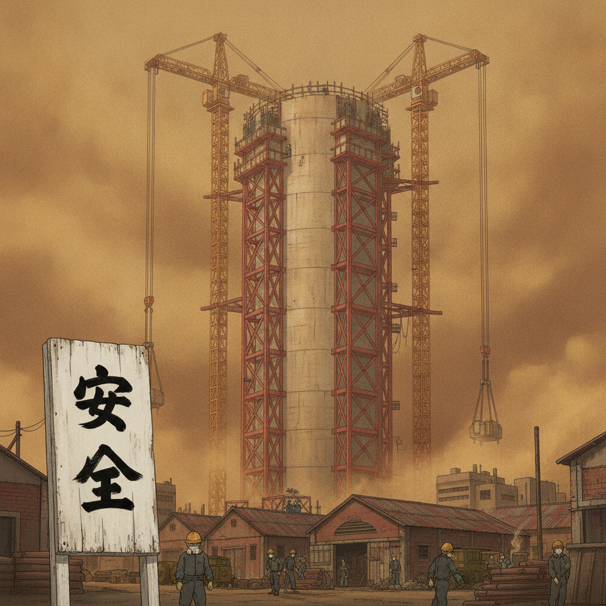
Built with a scuttled carrier's hoisting tackle. The oil leaks were priced into the fare schedule.
Winter 36 — the wildcat founding. Rogue courier drivers, midnight drag-racers, and chop-shop mechanics who refuse the harbor syndicates' terms walk out of a Kaiun-controlled garage en masse, tools in hand, and set up under the expressway in Kotobuki. The Iron Wheel Union is founded without a charter, a headquarters, or permission — its founding document is a union card stamped in grease, and its first act is to run the broken industrial lift that the elevator authority condemned. Boss Tetsu's rule, still quoted: "The roads are a commons. Drive well."
Winters 38–40 — the panel fields. KPC carpets the bay's southern reach with floating photovoltaic arrays — the Bay Plan's ghost, built cheaper and stranger than the megastructure the old planners dreamed of. Kaiun-gumi claims the maintenance fees; KPC claims the power revenue; the Iron Wheel tappers claim the dark corners between the pontoons, siphoning current for elevator bribes. Three claims, one grid, no resolution. The city stops asking who owns things and starts asking who collects.
The present — the gig-driver economy. The map is fixed. The dust is permanent. The settlement chit prints after every job: Sol-88 excise, dust tithe, roadbed tariff, elevator toll. Auntie Shizue barks orders over the radio; the Meter Maid writes tickets in silence; Mrs. Yamashita calls her cab every Tuesday at 11:15 sharp. The faction wars tick through their phases — blockades move, terminals change hands, surge multipliers follow the fighting. And on certain nights, out past the rigs, the water glows teal-green, and the Iron Wheel logbook gets a new entry, and nobody — not KPC, not the fishermen, not the drivers — explains it. The page stays blank after the entry. It is always waiting for tonight.
[IRON WHEEL WAYSTATION LOGBOOK — last entry, undated]: "Glowed again. Brighter past the third rig. Jiro's marble, the sea, the marble. The sea wins. — K."
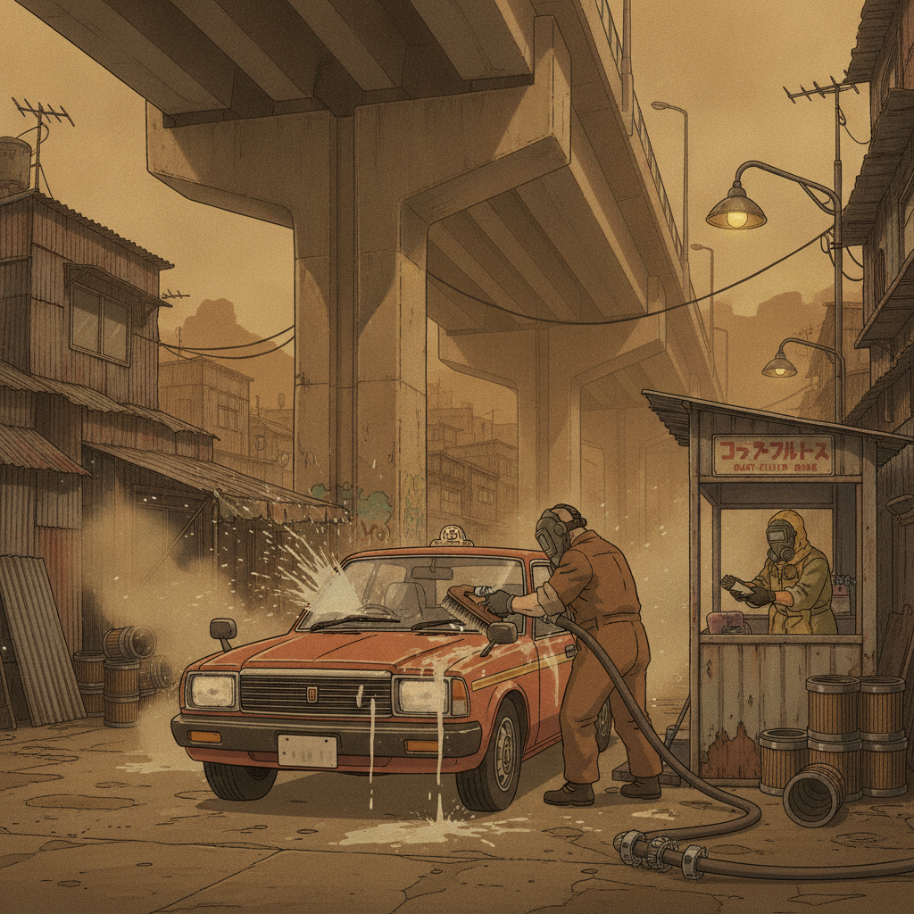
The most recession-proof business in Kurogane Bay: the rinse bay. The dust is the one tax nobody dodges.
OPEN QUESTIONS — pending BIBLE DELTA
These are decisions the bible has not yet taken. Nothing here is canon until Craig rules.
- Terminal pairing (map canon): the bible names Terminals 1 & 3 by their Aerium ends and Terminal 2 by its Tenjin end. This chapter pairs each shaft with a Lower and Upper terminal (Shaft 1: Daikoku-east ↔ Aerium T1; Shaft 2: Tenjin-north T2 ↔ Aerium customs esplanade; Shaft 3: Kotobuki basin ↔ Aerium T3). Confirm or redraw.
- The Harbor Tram's fixed route: the tram is a kinematic spline — which boulevards does it run? Proposed: the Daikoku quay boulevard → Tenjin's central canyon → the West Gate road. Needs a bible line.
- The panel fields' disputed history: who built the first arrays, and when did KPC's claim begin? Kaiun, KPC, and the Union each tell it differently — the bible should pick the official lie and note the other two.
- Dating convention: this chapter uses winters-since-the-Surrender plus era names (Scrape / Bloom / Lift). Ratify, or replace with municipal ordinance-cycle dating.
- The distant skyscrapers: the Nagisa skybox shows a city across the water. Is it the mainland capital, a rival port, or uninhabited? Canon currently says "skybox, not geometry" — the art book should name what the silhouette is, even if drivers never go there.
- Moriyama's acquisition winters: her land consolidation is dated by implication only. Does the bible want her origin story told (the auction, the tariff book), or should she remain an off-page force?
- Sea-mystery guardrails for future writers: folklore entries and conflicting institutional voices are allowed; scientific resolution is banned. Should the bible also ban new physical evidence (e.g., a recovered artifact), or only explanations?
- Minami's first name and face: "Goro" is bible canon; the mask law means no face is ever shown — but the art book should fix his mask (transport-board chairman's regalia) so every depiction agrees.
- The Meter Maid's jurisdiction: she tickets wherever you idle illegally — does she operate in the Upper City too, or is she a Lower City fixture? (Affects the comedy engine's range.)
- Nagisa's teal catch: the fishing economy runs on seafood from the changed sea. Is the catch safe to eat, and does anyone in-universe ask? (The Fishmonger Brotherhood's green-marble rite implies they ask every morning — the bible should say whether the question is ever answered. It shouldn't be.)
End of chapter. BIBLE DELTA pending — no implementation tasks until Craig approves the bible.
Mock gallery
VI. Fleet & Gear
Six vehicle classes, upgrade paths, the cargo catalog, and driver gear.
KUROGANE BAY Art Book — Chapter: the vehicles, the upgrades, the cargo, the kit
Status: draft for bible approval. Canon sources: gig-city-world-bible.md §7/§9/§12, gig-city-retrofutur-identity.md §1/§4/§8, showa-dust-extrapolation.md §5.2/§5.8. Research: 2 Gemini consult rounds (upgrade-tier legibility; cargo telegraphing) — digested below, not quoted.
Design laws governing this chapter:
- All vehicles are analog machines: carburetors tuned by ear, vacuum tubes, stamped steel, bakelite, rubber hoses with worm-gear clamps. No digital-era form factors (§15 tech ceiling).
- Comedy emerges from systems (unsecured-cargo physics, passenger state machines) — no written jokes, no gag dialogue, anywhere in this chapter. Cargo behaviors are described as physical systems only.
- Original designs, no real-car copies. The greenhouse (A/B/C-pillar profile) and wheel centerlines of each chassis are never hidden by upgrades — player ownership must survive all 5 tiers.
- Every face is masked; every cab carries dust protection. The cab is sovereign ground: the wheelman never leaves the wheel.
A. THE 6 VEHICLE CLASSES
A1. Hinode Carrier — the starter beater cab
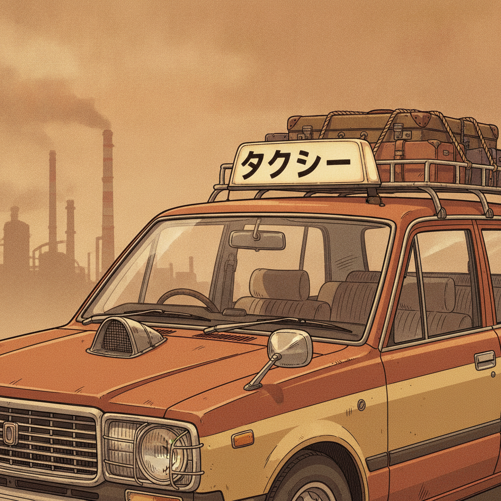
The Hinode Carrier: boxy '70s notchback, rooftop VACANT flag, fender bullet mirrors, cyclone intake on the hood, spare filter canisters on the roof rack.
Silhouette: Upright, honest, boxy '70s notchback — a tall greenhouse, flat deck lid, nearly vertical windshield. The proportions say "fleet issue" before the paint does. Nothing on this car is trying to look fast.
Signature details: Rooftop VACANT flag on a brass stalk, lit by a small incandescent bulb (the fleet-cab identity marker — see retrofur §1). Fender-mounted chrome bullet mirrors on thin stalks. Mechanical split-drum taximeter on the dash, flipping physical brass plates. White lace seat covers over cracked tobacco-brown vinyl. Pneumatic-lever rear door that snaps open with a hiss. Grille badge: a rising-sun roundel, fictional marque.
Dust-era modifications: Conical cyclone filter intake on the hood (a miniature cement mixer — the bus-hauler lineage from §5.2, shrunk to cab scale). Round headlights caged behind wire guards. Roof rack carrying spare filter canisters like ammunition. Dust caked thick on every horizontal surface; two-tone paint split at the body-side rub strip (faded mustard cream over rust-brown primer).
Unlocks: Cab fares, point-to-point express gigs. The bread-and-butter machine; it fits everywhere and impresses no one.
Fantasy: The first cab you're proud of. Clients tip the driver who keeps a beater this honest — and the Union notices drivers who start here.
A2. Tatsumi Hauler — the cargo van
Silhouette: Cab-over flat-nose box — the engine sits under the driver's seat, so the nose is a vertical wall with two round eyes. Tall, rectangular, unapologetic. The roof is a working surface, not styling.
Signature details: Brass pneumatic courier cylinders standing upright in leather holsters along the flank (the tube-city's network, carried on the body). Split tailgate: the top half lifts, the bottom half folds down as a loading step. Enamel route plate instead of a destination blind — routes don't change in the dust. Oversized JIS hex bolts on every panel; ribbed vinyl floor.
Dust-era modifications: Twin cyclone intakes on the flanks, caged lamps, welded rebar roof-basket (the §5.8 handcart descendant: everything lashed by hand, with rope). Spare filter canisters in a side pannier. Mud flaps with white stenciled kanji.
Unlocks: Multi-drop milk runs (3–6 drops), fragile egg-runs (interior rack volume), heavy haul (subcontract basis), hot contraband (small parcels), perishable wholesale squeezes.
Fantasy: A warehouse with a license plate. When the dispatcher says "bring the big one," this is the big one.
A3. Ohtori Sovereign — the luxury sedan
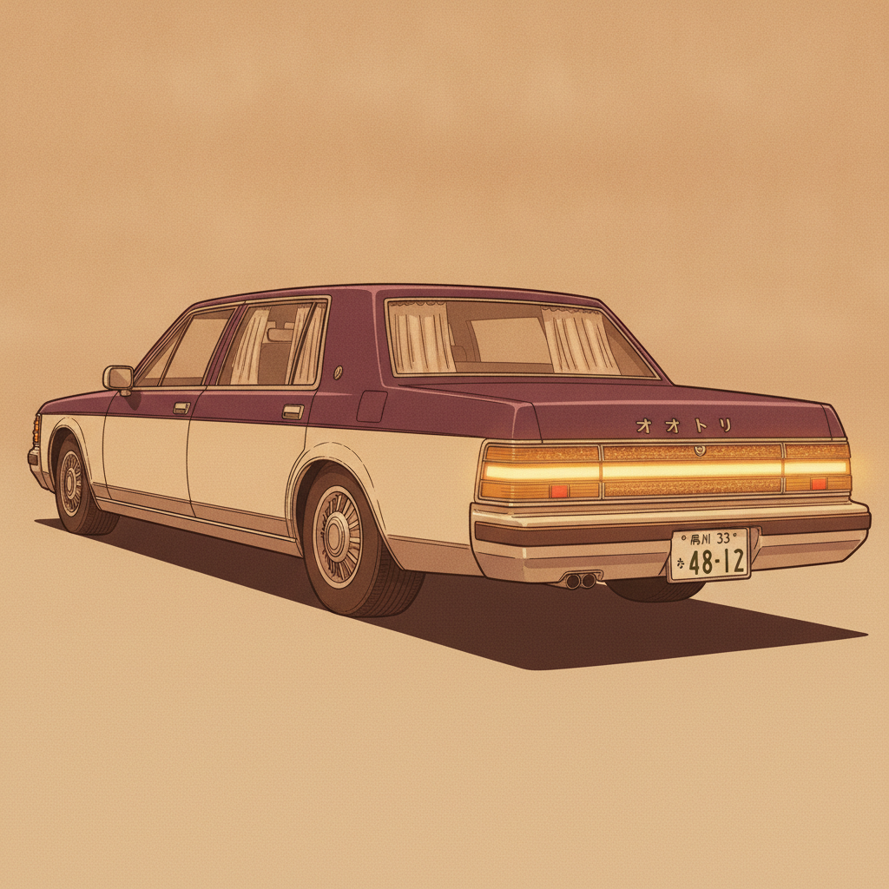
The Ohtori Sovereign: stretched brutalist barge, vacuum-tube taillight bar, lace curtains, sealed formal livery.
Silhouette: A stretched brutalist barge — long flat hood, upright formal greenhouse, and a trunk that reads like a bank vault. The wheelbase is the status; the car announces arrivals before the driver does.
Signature details: Full-width vacuum-tube taillight bar, glowing warm amber (filament emission — emissive-restraint compliant). Lace curtains on the rear windows. Upright formal chrome grille with vertical bars. Chrome trim you could shave in. Deep-pile carpet, burled-bakelite dash, a brass dashboard plaque engraved with the owner's name. Hand-crank windows, because power windows are for people who don't employ drivers.
Dust-era modifications: Sealed, gasketed dust-proof body panels (rubber bead visible along every shut line). Caged headlights. The vacuum-tube bar is recessed behind a washable lens. Formal two-tone — deep imperial purple over cream — reserved by law of taste for Upper City service (imperial purple is an Upper-City-only accent).
Unlocks: VIP chauffeur gigs, corporate escort, prestige fares. Appeal-gated: owning a car at Appeal ≥ 70 adds ~20% more personal-gig offers — the car clients check before they check the driver.
Fantasy: Silence has a chassis number. Passengers don't look at the driver; they look at what they're sitting in, and decide what secrets are safe in it.
A4. Raiden Fastback — the tuner/muscle car
Silhouette: A wedge — low nose, rising beltline, kammback flat-cut tail. The hood carries a rectangular cutout through which the carburetors breathe: twin velocity stacks standing proud of the bodywork like organ pipes. Turbine wheels. The stance says "someone else's fuel."
Signature details: Exposed carburetors through the hood cutout (tuned by ear at Kotobuki). Turbine wheels with polished lips. Cockpit-crown whip antennae with a union pennant. Aftermarket brass tachometer the size of a dinner plate, bolted to the column. Driver's door carries the Iron Wheel Union roundel — this is the union's car.
Dust-era modifications: Exposed pod filter on the velocity stacks (changed between runs). Altitude compensator plumbed into the carb linkage (a Lower tune runs rich and smoky upstairs without it — and smoke attracts corporate police). Caged headlights, per law.
Unlocks: Hot contraband gigs, underground outrun events, checkpoint rallies, pink-slip sprints.
Fantasy: It runs on siphoned Sol-88 and your confidence. The fastest way to learn that gray fuel fouls vacuum-tube electronics is to feel it foul yours mid-pursuit.
A5. Goliath 800 — the heavy flatbed rig
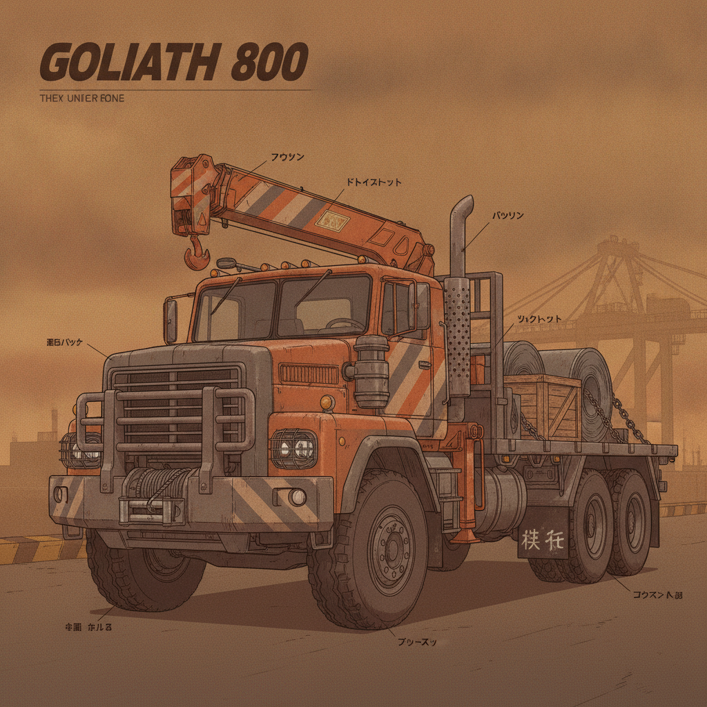
The Goliath 800: twin-steer tractor, knuckle-boom crane, winch bumper, chained flatbed load, annotated like a workshop manual.
Silhouette: Twin-steer tractor — two front steering axles — pulling a long riveted flatbed. The cab is a riveted steel box with a split windshield; the roof carries marker lamps on a light bar. Behind the cab, a knuckle-boom crane folded like a sleeping arm. Everything on this vehicle is load-rated and stenciled as such.
Signature details: Knuckle-boom crane with a hook block and chain sling. Winch bumper with a coiled steel cable and fairlead rollers. Flatbed with stake pockets, rub rails, and a headache rack behind the cab. Air-horn trumpets on the cab roof (audible through dust). Hazard-orange and soot-gray paint with chevron panels — the Tonnage Priority rule (§6) made livery: this vehicle yields to nothing.
Dust-era modifications: Dual cyclone intakes on both flanks. Perforated heat shield on the exhaust stack with a rain flap. Sealed bearing caps on all axles. The flatbed's tie-down rails are doubled — cargo here is chained, never roped.
Unlocks: Oversized freight, heavy haul / flatbed repo gigs, syndicate heavy work (crane-lift extractions, dock salvage), panel-field service runs.
Fantasy: The street yields to you. Trams yield to nothing; zaibatsu haulers yield only to rail; everything else yields to the Goliath. Traffic planning becomes somebody else's problem.
A6. Mirage Zero — the exotic wedge
Silhouette: A doorstop — a pure show-car wedge with a knife-edge nose, a wraparound glasshouse, and a louvered engine deck venting heat through horizontal slats. The pop-up headlight brow gives it a heavy-lidded stare. This is Showa show-car fantasy, not a hypercar.
Signature details: Pop-up headlight brow (mechanical linkage, hand-crank backup). Louvered engine deck. Flush door handles that pop on a thumb-lever. Turbine-style wheels, polished. The paint is the feature: deep candy lacquer over metalflake, hand-rubbed — and dust sticks to it like guilt, which is why owners pay for rinses.
Dust-era modifications: Sealed underbody pan (the wedge can't afford dust in the intake tract). Louvers carry mesh screens against grit. The pop-ups are caged when raised. Owners fit the lead smuggler trunk as a matter of course — prestige cargo deserves prestige concealment.
Unlocks: Top-tier syndicate gigs, prestige fares, elevator queue-jump contracts (the car is the bribe), Upper City personal deliveries.
Fantasy: A rumor with headlights. When a Mirage Zero idles at a Chidori curb, the whole strip recalculates who matters.
B. UPGRADE PATHS — what each tier LOOKS like
B0. The legibility doctrine (from Gemini design consult, canon-filtered)
Every stat owns a zone and a shape language on the car, so tiers never read as each other:
| Stat | Zone | Shape language |
|---|---|---|
| Speed | Hood & rear exit | Directional, swept — acute triangles pointing backward: ram-air scoops, dual snorkel intakes, high-angled exhaust stacks |
| Cargo | Roof & trunk cavity | Volumetric, boxy — upward-expanding cubes: rebar roof baskets, stepped can racks, bulging hydraulic trunk lids |
| Health | Perimeter & wheel wells | Massive, heavy — chamfered trapezoids, continuous horizontal bands: push bars, mesh window grilles, bolt-on skid plates |
| Appeal | Cabin crown & embellishments | Linear, kinetic — radiating vertical accents: chrome stacks, whip antennae, amber fog-lamp arrays, metallic sunstrips |
The 5-tier growth arc runs scrap → fabricated → commercial → specialist → prototype, and it scales the chunk, not the count: one massive structural plate on four comic-book rivets, never twenty small bolts. Tier breaks on the silhouette run roughly 5% → 10% → 20% → 35% → a full contour change — but the greenhouse and wheel centerlines are never covered. In the dust, detail dies at 50 meters; contour survives. So every tier's outer boundary carries the heaviest ink line weight, and high-tier hardware is painted in contrasting values (zinc-chromate yellow, brushed aluminum, rust-red anti-fouling) against the car's matte base paint.
Economy (bible §9): a minor upgrade ≈ 3–4 gigs of earnings; a full vehicle tier ≈ 30–40 gigs + a milestone gate (the scripted exam mission).
B1. SPEED — the car learns to breathe and exhale
- T1 (Scrap): Re-jetted carb, primer-gray hood scoop the size of a lunchbox, hose-clamped to the air cleaner. One exhaust tip swapped for a larger-bore pipe. Reads as: someone opened the hood with intent.
- T2 (Fabricated): A single welded pod filter standing proud through a rough-cut hood hole, edges finished with a rubber gasket. Dual exhaust with high-angled tips. Reads as: the engine now breathes through its own hardware.
- T3 (Commercial): Ram-air hood scoop with a proper stamped flange; dual snorkel intakes flanking the windshield; an external oil cooler hanging off the front fascia with braided lines. Reads as: cooling and induction are now systems.
- T4 (Specialist): Hood cutout enlarged and framed in a welded steel surround; twin velocity stacks with rain shields; a wraparound exhaust manifold heat-shield in brushed aluminum. Reads as: the engine is no longer under the hood — the hood is around the engine.
- T5 (Prototype): A full blower scoop cutting the windshield sightline at the base, spring-loaded radiator louvers that visibly snap open under load, exhaust stacks in polished brass. Reads as: industrial prototype. The silhouette breaks clean — this is a different animal wearing the same greenhouse.
B2. CARGO — the car grows rooms
- T1 (Scrap): A ratcheting strap set and a plywood trunk divider. Reads as: cargo could go here now.
- T2 (Fabricated): Welded rebar roof-basket, four anchor points with eye bolts. Reads as: the roof is load-bearing.
- T3 (Commercial): Full roof rack with side rails, stepped jerry-can rack on the tailgate, hydraulic trunk-lid struts (the lid bulges slightly — it has opinions now). Reads as: the car carries inventory.
- T4 (Specialist): Cantilevered rear deck extending past the bumper on steel brackets; chain tie-down rails; a lockable side pannier for courier cylinders. Reads as: the car is a delivery vehicle wearing a cab's clothes.
- T5 (Prototype): A full-length baffled drop-tank strapped across the roof deck — one massive vessel instead of five small cans — plus a tailgate crane-arm for loading heavy items. Reads as: mobile depot.
B3. HEALTH — the car puts on armor
- T1 (Scrap): Bolt-on skid plate under the sump, four comic-book rivets. Primer-gray patch panels. Reads as: it has been hurt before.
- T2 (Fabricated): Welded tubular push-bar on the nose; steel-mesh grille over the windshield (three chunky bars — negative-space punch-outs that read at 50 m). Reads as: it expects to be hurt again.
- T3 (Commercial): Full perimeter rub rail in channel steel; bolt-on wheel-well armor hugging the tires; reinforced door beams (visible as external seam plates). Reads as: a battering ram with paperwork.
- T4 (Specialist): Exocage tubes framing the cabin, tied into the bumpers; double-skinned sills; a belly pan in checker plate. Reads as: the greenhouse is now inside the armor.
- T5 (Prototype): Full dust-armor package (see B5): gasketed panels, sealed bearing caps, armored fuel cell, mesh screens over every intake. The car reads as a single sealed ingot that happens to have windows.
B4. APPEAL — the car learns manners
- T1 (Scrap): A wash, a wax, and the lace seat covers replaced. Incandescent roof-sign bulb swapped for a fresh one. Reads as: somebody cares.
- T2 (Fabricated): Chrome trim straightened and re-mounted; whip antenna with a union pennant; amber fog lamps on a bolt-on bar. Reads as: cared-for, with opinions.
- T3 (Commercial): Two-tone respray with a hard rub-strip split line; polished turbine-look wheel covers; metallic sunstrip on the windshield. Reads as: a professional's car.
- T4 (Specialist): Full chrome stack set, lace curtains (sedan classes), burled-bakelite dash trim, brass plaque with the driver's name. Reads as: the car clients check before they check the driver.
- T5 (Prototype): Show-car finish — candy lacquer, hand-rubbed, vacuum-tube taillight bar (Sovereign) or full brightwork package; the dust slides off for exactly one gig, and that's the point. Reads as: arrival.
B5. DUST-ERA MODULES — the tax you can see
These ride alongside the four stats — the dust is a tax, and these are the receipts, bolted on:
- Particulate filter tiers (longer boost before saturation): T1 — a tin canister with a paper element hose-clamped to the intake. T2 — twin canisters in a side pannier. T3 — a cyclone pre-separator cone (the miniature cement mixer) feeding the canister. T4 — dual cyclones, one per flank, with an oil-bath secondary. T5 — a large conical separator with brass plumbing and a dash-mounted saturation gauge (analog needle, red zone). The filters grow; the plumbing gets brassier.
- Altitude compensator (carb auto-trims between strata): T1 — a dash knob on a Bowden cable the driver trims by hand (and by ear). T2 — a brass diaphragm valve plumbed into the carb linkage, self-trimming. T3 — linked twin-carb compensation with a dash repeater gauge. Without it, a Lower tune runs rich and smoky upstairs — and smoke attracts corporate police. The valve gets bigger; the knob disappears.
- Lead-sealed smuggler trunk (decon-proof; +mass; changes drift physics): the trunk lid gains vault-grade hinges and a visible lead-gray seam at every shut line; "SEALED" stenciled in whitewash. The rear suspension visibly sits lower — the mass is honest. At the elevator inspection gantry, sealed cargo reads clean; the car reads guilty to anyone who knows what a lead seam looks like. The trunk gets heavier-looking, and the stance tells the truth.
- Dust armor (sealed bearings, gasketed panels — less degradation in Shinkai): rubber bead along every panel gap; sealed bearing caps on the axles; mesh screens over the grille and intakes; checker-plate belly pan; extended mud flaps with stenciled kanji. The armor accumulates: beads, caps, screens, plates — each tier adds one more layer of sealed intent.
C. CARGO ITEMS — the physical payload catalog
The telegraphing doctrine (from Gemini design consult, canon-filtered): every item's form tells you its handling rules before you touch the throttle. Ground 70% of each item in period-accurate 1970s utility (corrugated tin, Showa typography, hemp knots, oxidized steel); the remaining 30% is the game tell, scaled up — one oversized analog gauge, one violently swinging sight-glass, one absurdly heavy weld bracket. Exactly one animated tell per item. Never a plain wooden crate: perishable boxes are slatted, heavy boxes get cast-steel corner boots, fragile boxes hang inside gimbal rings.
Lashing grammar (trunk economy — everything external, everything visible):
- Hemp rope — elastic, honest. Knot count is the tell: dense figure-eight knots mean this load wobbles; rope stretches under braking and the load shifts — you feel it through the wheel.
- Steel chain — zero stretch, for dense cargo only. Chains spark against sheet metal under load — the audio-visual warning that an anchor point is about to rip out.
- Canvas tarp — milspec olive, ratchet-cinched: weatherproof, suppresses shifting. A loose, fluttering tarp costs you top speed in drag.
- Leather straps + brass buckles — paper cargo. Precise, quiet, expensive-looking. If it's buckled in brass, it cannot get wet, full stop.
C1. Fragile egg-run (G-force & bump thresholds)
| Item | Visual | Handling telegraph |
|---|---|---|
| Wedding cake | Gloss-white box, cherry-red cross-braces, carried in a tall skeletal wire cage with external coil dampener springs; string handles | Needle-thin, tall silhouette; the springs visibly bottom out before the cake does — the cage is the gauge |
| Stemware crate | Slatted crate stenciled "GLASS — THIS SIDE UP" in Showa type, suspended inside outer gimbal rings on the roof rack | Gimbal rings swing with the car's roll; when they hit their stops, you're one pothole from shards |
| Nitro cells | Ribbed steel pressure cylinders with thick rubber bumper rings; a high-contrast analog needle gauge with a red kill zone, mounted valve-side toward the driver | Hazard-yellow/black diagonal bands; the needle is the item's heartbeat — and its threat |
C2. Perishable timer (cold-chain countdowns)
| Item | Visual | Handling telegraph |
|---|---|---|
| Bluefin tuna | Wooden fish box packed with cracked ice, slatted sides, mint-green stencil; a sight-glass tube on the flank shows meltwater level | Cold vapor drips backward in the slipstream — the vapor trail is the timer; when it stops, the fish is dying and so is your payout |
| Live octopus | Sealed round tank with a gasketed lid, water sloshing visible through a thick sight-glass band; canvas dust-cover lashed over the top | The sloshing waterline is the momentum tell — brake hard and the whole tank surges; octopus arms visible through the glass when it settles |
C3. Paper chase (cannot get wet, cannot be seen)
| Item | Visual | Handling telegraph |
|---|---|---|
| Bond certificates | Flat leather document case, brass buckles, wax seal; strapped inside the cabin, never on the roof | No external tell at all — the absence of cargo is the tell; heat level rises silently while the case sits on the back seat |
| Blackmail notebook | Small oilcloth-wrapped parcel, string-tied, tucked in a courier cylinder | The cylinder rides in the brass flank holsters — visible to anyone who knows what a courier cylinder means |
C4. Tube-intercept (pneumatic network)
| Item | Visual | Handling telegraph |
|---|---|---|
| Pneumatic capsule | Brass cylinder, knurled end-caps, paper dispatch chit wired to the side | Snatched mid-transit or delivered sealed — an unbroken wax seal pays double; the chit flutters in the slipstream as a speed tell |
C5. Cryo-timer (RPM-charged)
| Item | Visual | Handling telegraph |
|---|---|---|
| Organ cooler | White medical chest with a red-cross stencil, bolted to the trunk floor; an exposed fan belt drives a small alternator with a spinning amber charge lamp | The charge lamp is the whole gig: it only stays lit above 3,500 RPM — the lamp dying is the patient dying; the belt squeal under load is the audio tell |
C6. G-force threshold (velvet hands)
| Item | Visual | Handling telegraph |
|---|---|---|
| Vinyl acetates | Flat square crate in a domed acrylic cloche, suspended on coiled dampener springs inside an outer frame; "0.4 G" stenciled on the side | One oversized analog G-meter bolted to the crate's face, needle in green — the needle is the contract; the springs compress visibly under lateral load |
C7. Volatile mass (slosh + detonation)
| Item | Visual | Handling telegraph |
|---|---|---|
| Fuel canisters | Red steel jerrycans, chained upright in a welded rack with padlocks; each carries an analog pressure needle with a red kill zone | Chains — never rope — because this cargo does not forgive; impact spikes swing the needles, and the rack's chain tension sings under hard cornering |
C8. Unsecured-cargo comedy (rigid-body mass, physics-driven)
| Item | Visual | Handling telegraph |
|---|---|---|
| Safe | Cast-iron dark slate, ultra-flat profile hugging the roofline, cast-steel corner boots, chained down; visibly drops the rear suspension | The car's stance is the warning — low rear, bent rack clamps; brake hard and the mass keeps going (this is the safe-through-the-windshield system, stated as physics) |
| Chicken crate | Slatted wood crate, wire-mesh sides, broken porous silhouette — feathers and shifting mass visible through the slats | Porous silhouette with protruding geometry; the crate's center of mass visibly shifts in corners; if the lashing fails, feathers become a cockpit-visibility system event |
D. DRIVER GEAR — the wheelman's kit
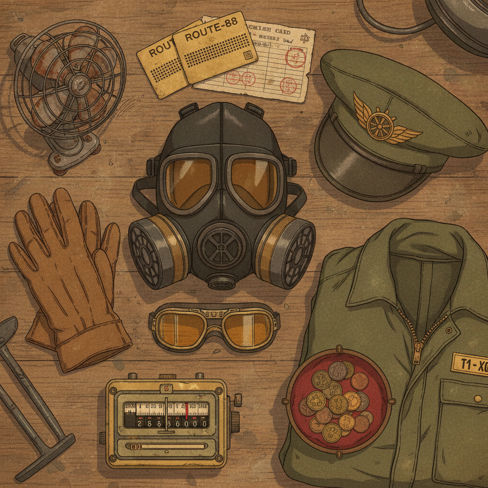
The wheelman's kit: respirator, amber goggles, union cap, ROUTE-88 punch cards, stamped union card, pigskin glove, brass-zippered coverall, coin tray, split-drum taximeter, dash fan.
The driver is never modeled unmasked. The kit is the character — silhouette + mask + props, per the character law.
D1. The worn kit
- Union driver cap — peaked, olive drab, with the Iron Wheel Union roundel embroidered in brass thread. The brim is sweat-stained in the exact shape of a forehead. Worn over the dust hood, never instead of it.
- Respirator + amber goggles — full-face industrial respirator with round filter canisters; amber-tinted goggles worn over or under, driver's choice. Behind the respirator, only the eyes show — and in the game's framing, the eyes are usually in shadow anyway.
- Pigskin gloves — fingerless or full, oil-darkened at the palms. The steering wheel wears through gloves the way roads wear through tires.
- Brass-zippered coverall — olive or tobacco-brown, brass zips at the chest and cuffs, a hundred pockets (Mariko Katsu's influence on garage fashion is citywide). Name tape on the breast: surname only, chain-stitched.
- The paper union card — reputation is stamped, not XP. A folded paper card in a waxed-canvas sleeve; district stamps in red ink, tallies in pencil, suspensions in black. Upgraded at chop shops, presented at elevator terminals and faction gates. Lose it and you're nobody with a car.
D2. The working tools
- ROUTE-88 punch cards — brass-edged card stock, punched for each accepted gig. Fed into the dash slot with the CHUNK-CHUNK; the phosphor CRT traces the route with a visible sweep beam. Drivers carry a card wallet; a veteran's wallet is thick as a novel.
- Coin tray — red felt, dash-mounted: coins, delivery chits, cigarette butts, toll tokens. The tray's contents are the driver's autobiography.
- Split-drum taximeter — mechanical, brass plates flipping with each fare increment. It is also the driver's lie detector: the drums don't stop for anyone.
- Dash-mounted oscillating fan — a 12V exposed-blade metal fan clamped to the A-pillar, sweeping the cabin with dust-scented air. It doesn't cool anything; it moves the air, which is the next best thing.
D3. The cab interior as confessional booth
The Night on Earth rule: the cab is the one sealed, private room in a city with no privacy. The dashboard suite — green vector CRT, split-drum taximeter, oscillating fan, coin tray, lace seat covers, the pneumatic door lever — frames every passenger conversation like a confessional screen. Passengers say things in the back of a cab they'd never say anywhere else: the sweating exec's double life, the oyabun's daughter's date, the whistleblower's evidence. The driver hears everything, judges nothing, and the ROUTE-88 keeps the route. The interior is a storytelling machine built from stamped steel and bakelite — no dialogue is scripted here; the situation (who's in the back seat, what's in the trunk, how much heat is outside) does the work.
OPEN QUESTIONS (pending BIBLE DELTA)
- Mirage Zero class gating — the bible assigns it "top-tier syndicate gigs, prestige fares." Is there a named gig class that requires the Mirage specifically (like Ohtori ↔ Appeal ≥ 70 VIP), or is it pure aspiration/prestige with no mechanical gate?
- Subcontract/lease visuals — when a client provides the vehicle for a 50% cut, does the leased vehicle carry visible client livery (syndicate colors, corporate plates)? A visual tell would let players read "this run is borrowed" at a glance.
- Lead-trunk vs. inspection triage — the smuggler trunk's lead seams are visible to anyone who knows what to look for. Does the elevator gantry scanner gameplay treat a lead trunk as "reads clean," "reads suspicious," or "reads clean but flags the car for manual inspection"? The visual design hinges on which.
- Appeal ≥ 70 on non-Sovereign chassis — can a fully-appealed Hinode Carrier (T5) clear the VIP gate, or is the Ohtori's class the gate regardless of stat? (Bible says "corporate clients refuse a rusted hatchback (Appeal ≥ 70)" — is the number the gate or the class?)
- Union card tiers — how many stamp tiers exist on the paper card, and does the card's visual state (stamps, black marks) gate elevator Express Freight Line access directly, or only faction standing?
- Filter economy vs. filter tiers — particulate filters are both a recurring cost (the Dust Tithe: rinses, replacements) and an upgrade track (B5). Is a T5 filter a purchase that ends the tax, or does it just slow the meter? The visual "filters grow" arc implies permanence; the economy implies recurrence.
- Punch-card inventory — are ROUTE-88 cards single-use per gig (a consumable the driver buys in stacks) or reusable blanks re-punched per job? Affects the card-wallet prop and any pre-gig economy.
- Goliath vs. Hauler overlap — the Tatsumi unlocks "heavy haul (subcontract)" and the Goliath unlocks "heavy haul / flatbed repo." Where is the mechanical line: trailer towing only on the Goliath? Crane-lift gigs only on the Goliath? Needs a one-line rule so the two classes don't blur.
End of FLEET & GEAR chapter draft. Mocks: mock-hinode-carrier.png, mock-ohtori-sovereign.png, mock-goliath-800.png, mock-cargo-lashing.png, mock-driver-gear.png — all 80s-anime cel, 1024×1024, verified by eye: warm umber shadows, no neon soup, no unmasked faces, no digital-era form factors.
Mock gallery
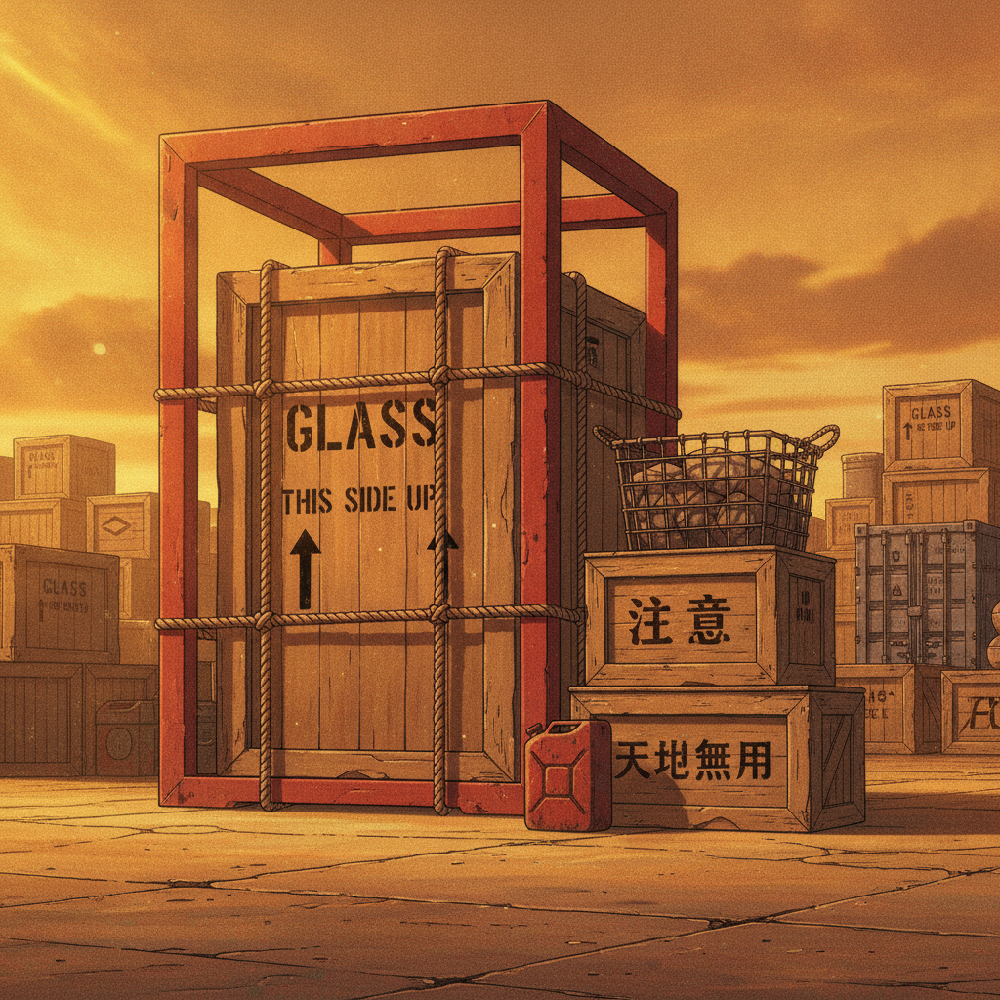